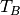

Full Changelog¶
3.0 (unreleased)¶
New Features¶
astropy.config¶
astropy.constants¶
astropy.convolution¶
astropy.coordinates¶
astropy.cosmology¶
astropy.extern¶
astropy.io.ascii¶
astropy.io.fits¶
astropy.io.misc¶
astropy.io.registry¶
astropy.io.votable¶
astropy.modeling¶
astropy.nddata¶
astropy.samp¶
astropy.stats¶
astropy.table¶
astropy.tests¶
astropy.time¶
astropy.units¶
astropy.utils¶
astropy.visualization¶
astropy.vo¶
astropy.wcs¶
API Changes¶
astropy.config¶
astropy.constants¶
astropy.convolution¶
astropy.coordinates¶
astropy.cosmology¶
astropy.extern¶
astropy.io.ascii¶
astropy.io.fits¶
astropy.io.misc¶
astropy.io.registry¶
astropy.io.votable¶
astropy.modeling¶
astropy.nddata¶
astropy.samp¶
astropy.stats¶
astropy.table¶
astropy.tests¶
astropy.time¶
astropy.units¶
astropy.utils¶
astropy.visualization¶
astropy.vo¶
astropy.wcs¶
Bug Fixes¶
astropy.config¶
astropy.constants¶
astropy.convolution¶
astropy.coordinates¶
astropy.cosmology¶
astropy.extern¶
astropy.io.ascii¶
astropy.io.fits¶
astropy.io.misc¶
astropy.io.registry¶
astropy.io.votable¶
astropy.modeling¶
astropy.nddata¶
astropy.samp¶
astropy.stats¶
astropy.table¶
astropy.tests¶
astropy.time¶
astropy.units¶
astropy.utils¶
astropy.visualization¶
astropy.vo¶
astropy.wcs¶
Other Changes and Additions¶
- Nothing changed yet.
2.0 (unreleased)¶
New Features¶
astropy.config¶
astropy.constants¶
- Constants are now organized into version modules, with physical CODATA
constants in the
codata2010andcodata2014sub-modules, and astronomical constants defined by the IAU in theiau2012andiau2015sub-modules. The default constants inastropy.constantsin Astropy 2.0 have been updated fromiau2012toiau2015and fromcodata2010tocodata2014. The constants for 1.3 can be accessed in theastropyconst13sub-module and the constants for 2.0 (the default inastropy.constants) can also be accessed in theastropyconst20sub-module [#6083] - The GM mass parameters recommended by IAU 2015 Resolution B 3 have been
added as
GM_sun,GM_jup, andGM_earth, for the Sun, Jupiter and the Earth. [#6083]
astropy.convolution¶
- Major change in convolution behavior and keyword arguments. Additional details are in the API section. [#5782]
- Convolution with un-normalized and un-normalizable kernels is now possible. [#5782]
- Add a new argument,
normalization_rtol, toconvolve_fft, allowing the user to specify the relative error tolerance in the normalization of the convolution kernel. [#5649, #5177] - Models can now be convoluted using
convolveorconvolve_fft, which generates a regular compound model. [#6015]
astropy.coordinates¶
- Frame attributes set on
SkyCoordare now always validated, and any ndarray-like operation (like slicing) will also be done on those. [#5751] - Caching of all possible frame attributes was implemented. This greatly
speeds up many
SkyCoordoperations. [#5703, #5751] - A class hierarchy was added to allow the representation layer to store differentials (i.e., finite derivatives) of coordinates. This is intended to enable support for velocities in coordinate frames. [#5871]
replicate_without_dataandreplicatemethods were added to coordinate frames that allow copying an existing frame object with various reference or copy behaviors and possibly overriding frame attributes. [#6182]- The representation class instances can now contain differential objects. This is primarily useful for internal operations that will provide support for transforming velocity components in coordinate frames. [#6169]
EarthLocation.to_geodetic()(andEarthLocation.geodetic) now return namedtuples instead of regular tuples. [#6237]EarthLocationnow haslatandlonproperties (equivalent to, but preferred over, the previouslatitudeandlongitude). [#6237]- Added a
radial_velocity_correctionmethod toSkyCoordto do compute barycentric and heliocentric velocity corrections. [#5752] - Added a new
AffineTransformclass for coordinate frame transformations. This class supports matrix operations with vector offsets in position or any differential quantities (so far, only velocity is supported). The matrix transform classes now subclass from the base affine transform. [#6218] - Frame objects now have experimental support for velocity components. Most
frames default to accepting proper motion components and radial velocity,
and the velocities transform correctly for any transformation that uses
one of the
AffineTransform-type transformations. For other transformations a finite-difference velocity transformation is available, although it is not as numerically stable as those that useAffineTransform-type transformations. [#6219, #6226]
astropy.cosmology¶
astropy.io.ascii¶
- Allow to specify encoding in
ascii.read, only for Python 3 and with the pure-Python readers. [#5448] - Writing latex tables with only a
tabularenvironment is now possible by settinglatexdict['tabletyle']toNone. [#6205] - Allow ECSV format to support reading and writing mixin columns like
Time,SkyCoord,Latitude, andEarthLocation. [#6181]
astropy.io.fits¶
- Checking available disk space before writing out file. [#5550, #4065]
- Change behavior to warn about units that are not FITS-compliant when writing a FITS file but not when reading. [#5675]
- Added absolute tolerance parameter when comparing FITS files. [#4729]
- New convenience function
printdiffto print out diff reports. [#5759] - Remove deprecated
NumCodeandImgCodeproperties on FITS_ImageBaseHDU. Use module-level constantsBITPIX2DTYPEandDTYPE2BITPIXinstead. [#4993] - Allow to instantiate a
BinTableHDUdirectly from aTableobject. [#6139]
astropy.io.votable¶
astropy.modeling¶
- Added
SmoothlyBrokenPowerLaw1Dmodel. [#5656] - Add
n_submodelsshared method to single and compound models, which allows users to get the number of components of a given single (compound) model. [#5747] - Added a
namesetter for instances of_CompoundModel. [#5741] - Added FWHM properties to Gaussian and Moffat models. [#6027]
- Added support for evaluating models and setting the results for inputs
outside the bounding_box to a user specified
fill_value. This is controlled by a new optional boolean keywordwith_bounding_box. [#6081] - Added infrastructure support for units on parameters and during model evaluation and fitting, added support for units on all functional, power-law, polynomial, and rotation models where this is appropriate. A new BlackBody1D model has been added. [#4855, #6183, #6204, #6235]
astropy.stats¶
- Added
biweight_midcovariancefunction. [#5777] - Added
biweight_scaleandbiweight_midcorrelationfunctions. [#5991] median_absolute_deviationandmad_stdhaveignore_nanoption that will usenp.ma.medianwith nans masked out ornp.nanmedianinstead ofnp.medianwhen computing the median. [#5232]- Implemented statistical estimators for Ripley’s K Function. [#5712]
- Added
SigmaClipclass. [#6206] - Added
std_ddofkeyword option tosigma_clipped_stats. [#6066, #6207]
astropy.sphinx¶
astropy.table¶
- Issue a warning when assigning a string value to a column and the string gets truncated. This can occur because numpy string arrays are fixed-width and silently drop characters which do not fit within the fixed width. [#5624, #5819]
- Added functionality to allow
astropy.units.Quantityto be written as a normal column to FITS files. [#5910] - Add support for Quantity columns (within a
QTable) in tablejoin(),hstack()andvstack()operations. [#5841] - Allow unicode strings to be stored in a Table bytestring column in
Python 3 using UTF-8 encoding. Allow comparison and assignment of
Python 3
strobject in a bytestring column (numpy'S'dtype). If comparison withstrinstead ofbytesis a problem (andbytesis really more logical), please open an issue on GitHub. [#5700] - Added functionality to allow
astropy.units.Quantityto be read from and written to a VOtable file. [#6132] - Added support for reading and writing a table with mixin columns like
Time,SkyCoord,Latitude, andEarthLocationvia the ASCII ECSV format. [#6181]
astropy.tests¶
enable_deprecations_as_exceptionsfunction now accepts additional user-defined module imports and warning messages to ignore. [#6223]
astropy.time¶
astropy.units¶
- The
quantity_inputdecorator will now convert the output to the unit specified as a return annotation under Python 3. [#5606] - Passing a logarithmic unit to the
Quantityconstructor now returns the appropriate logarithmic quantity class ifsubok=True. For instance,Quantity(1, u.dex(u.m), subok=True)yields<Dex 1.0 dex(m)>. [#5928] - The
quantity_inputdecorator now accepts a string physical type in addition to of a unit object to specify the expected inputQuantity‘s physical type. For example,@u.quantity_input(x='angle')is now functionally the same as@u.quantity_input(x=u.degree). [#3847] - The
quantity_inputdecorator now also supports unit checking for optional keyword arguments and accepts iterables of units or physical types for specifying multiple valid equivalent inputs. For example,@u.quantity_input(x=['angle', 'angular speed'])or@u.quantity_input(x=[u.radian, u.radian/u.yr])would both allow either aQuantityangle or angular speed passed in to the argumentx. [#5653] - Added a new equivalence
molar_mass_amubetween g/mol to atomic mass units. [#6040, #6113] Quantityhas gained a newto_valuemethod which returns the value of the quantity in a given unit. [#6127]Quantitynow supports the@operator for matrix multiplication that was introduced in Python 3.5, for all supported versions of numpy. [#6144]Quantitysupports the new__array_ufunc__protocol introduced in numpy 1.13. As a result, operations that involve unit conversion will be sped up considerably (by up to a factor of two for costly operations such as trigonometric ones). [#2583]
astropy.utils¶
astropy.visualization¶
astropy.vo¶
astropy.extern¶
API Changes¶
astropy.analytic_functions¶
- This entire sub-package is deprecated because blackbody has been moved to
astropy.modeling.blackbody. [#6191]
astropy.config¶
astropy.constants¶
astropy.convolution¶
- Major change in convolution behavior and keyword arguments.
astropy.convolution.convolve_fftreplacedinterpolate_nanwithnan_treatment, andastropy.convolution.convolvereceived a newnan_treatmentargument.astropy.convolution.convolvealso no longer double-interpolates interpolates over NaNs, although that is now available as a separateastropy.convolution.interpolate_replace_nansfunction. See the backwards compatibility note for more on how to get the old behavior (and why you probably don’t want to.) [#5782]
astropy.coordinates¶
- Removed deprecated
angles.rotation_matrixandangles.angle_axis. Use the routines incoordinates.matrix_utilitiesinstead. [#6170] EarthLocation.latitudeandEarthLocation.longitudeare now deprecated in favor ofEarthLocation.latandEarthLocation.lon. They former will be removed in a future version. [#6237]
astropy.cosmology¶
- Cosmological models do not include any contribution from neutrinos or photons by default – that is, the default value of Tcmb0 is 0. This does not affect built in models (such as WMAP or Planck). [#6112]
astropy.io.ascii¶
astropy.io.fits¶
commentsmeta key (which isio.ascii‘s table convention) is output toCOMMENTinstead ofCOMMENTSheader. Similarly,COMMENTheaders are read intocommentsmeta [#6097]- Remove compatibility code which forced loading all HDUs on close. The old
behavior can be used with
lazy_load_hdus=False. Because of this change, trying to access the.dataattribute from an HDU which is not loaded now raises aIndexErrorinstead of aValueError. [#6082] - Deprecated
clobberkeyword; useoverwrite. [#6203] - Add EXTVER column to the output of
HDUList.info(). [#6124]
astropy.io.misc¶
astropy.io.registry¶
astropy.io.votable¶
astropy.modeling¶
- Removed deprecated
Redshiftmodel; UseRedshiftScaleFactor. [#6053] - Removed deprecated
Pix2Sky_AZP.check_muandPix2Sky_SZP.check_mumethods. [#6170] - Deprecated
GaussianAbsorption1Dmodel, as it can be better represented by subtractingGaussian1DfromConst1D. [#6200] - Added method
sum_of_implicit_termstoModel, needed when performing a linear fit to a model that has built-in terms with no corresponding parameters (primarily the1*xterm ofShift). [#6174]
astropy.nddata¶
astropy.stats¶
astropy.table¶
- In Python 3, when getting an item from a bytestring Column it is now
converted to
str. This means comparing a single item to abytesobject will always fail, and instead one must compare with astrobject. [#5700] - Removed the deprecated
dataproperty of Row. [#5729] - Removed the deprecated functions
join,hstack,vstackandget_groupsfrom np_utils. [#5729] - Added
nameparamater to methodadd_columnandnamesparameter to methodadd_columns, to provide the flexibility to add unnamed columns, mixin objects and also to specify explicit names. Default names will be used if not specified. [#5996] - Added optional
axisparameter toinsertmethod forColumnandMaskedColumnclasses. [#6092] - The private
_parentattribute in theinfoattribute of table columns was changed from a direct reference to the parent column to a weak reference. This was in response to a memory leak caused by having a circular reference cycle. This change means that expressions likecol[3:5].infowill now fail because at the point of theinfoproperty being evaluated thecol[3:5]weak reference is dead. Instead force a reference withc = col[3:5]followed byc.info.indices. [#6277]
astropy.time¶
astropy.units¶
- Moved
units.cgs.emutounits.deprecated.emudue to ambiguous definition of “emu”. [#4918, #5906] jupiterMass,earthMass,jupiterRad, andearthRadno longer have their prefixed units included in the standard units. If needed, they can still be found inunits.deprecated. [#5661]solLum,``solMass``, andsolRadno longer have their prefixed units included in the standard units. If needed, they can still be found inunits.required_by_vounit, and are enabled by default. [#5661]- Removed deprecated
Unit.get_converter. [#6170] - Internally, astropy replaced use of
.to(unit).valuewith the newto_value(unit)method, since this is somewhat faster. Any subclasses that overwrote.to, should also overwrite.to_value(or possibly just the private._to_valuemethod. (If you did this, please let us know what was lacking that made this necessary!). [#6137]
astropy.utils¶
astropy.vo¶
astropy.extern¶
Bug Fixes¶
astropy.config¶
astropy.constants¶
astropy.convolution¶
astropy.coordinates¶
astropy.cosmology¶
astropy.extern¶
astropy.io.ascii¶
astropy.io.fits¶
commentsmeta key (which isio.ascii‘s table convention) is output toCOMMENTinstead ofCOMMENTSheader. Similarly,COMMENTheaders are read intocommentsmeta [#6097]- Use more sensible fix values for invalid NAXISj header values. [#5935]
- Close file on error to avoid creating a
ResourceWarningwarning about an unclosed file. [#6168, #6177]
astropy.io.misc¶
astropy.io.registry¶
astropy.io.votable¶
astropy.modeling¶
- Creating a compound model where one of the submodels is a compound model whose parameters were changed now uses the updated parameters and not the parameters of the original model. [#5741]
- Allow
MappingandIdentityto be fittable. [#6018] - Gaussian models now impose positive
stddevin fitting. [#6019] - OrthoPolynomialBase (Chebyshev2D / Legendre2D) models were being evaluated incorrectly when part of a compound model (using the parameters from the original model), which in turn caused fitting to fail as a no-op. [#6085]
- Allow
Ring2Dto be defined usingr_out. [#6192] - Make
LinearLSQFitterproduce correct results with fixed model parameters and allowShiftandScaleto be fitted withLinearLSQFitterandLevMarLSQFitter. [#6174]
astropy.nddata¶
astropy.stats¶
astropy.sphinx¶
astropy.table¶
astropy.table¶
astropy.tests¶
astropy.time¶
- Fixed the initial condition of
TimeFITSto allow scale, FITS scale and FITS realization to be checked and equated properly. [#6202]
astropy.units¶
astropy.utils¶
astropy.visualization¶
astropy.vo¶
- Fixed a bug in vo.samp when stopping a hub for which a lockfile was not created. [#6211]
astropy.wcs¶
astropy.extern¶
Other Changes and Additions¶
- Numpy 1.7 and 1.8 are no longer supported. [#6006]
- Python 3.3 is no longer suppored. [#6020]
- The bundled ERFA was updated to version 1.4.0. [#6239]
- The bundled version of pytest has now been removed, but the astropy.tests.helper.pytest import will continue to work properly. Affiliated packages should nevertheless transition to importing pytest directly rather than from astropy.tests.helper. This also means that pytest is now a formal requirement for testing for both Astropy and for affiliated packages. [#5694]
1.3.3 (2017-05-29)¶
Bug Fixes¶
astropy.coordinates¶
- Fixed a bug where
StaticMatrixTransformerroneously copied frame attributes from the input coordinate to the output frame. In practice, this didn’t actually affect any transforms in Astropy but may change behavior for users who explicitly used theStaticMatrixTransformin their own code. [#6045] - Fixed
get_icrs_coordinatesto loop through all the urls in case one raises an exception. [#5864]
astropy.io.fits¶
- Fix table header not written out properly when
fits.writeto()convenience function is used. [#6042] - Fix writing out read-only arrays. [#6036]
- Extension headers are written out properly when the
fits.update()convenience function is used. [#6058] - Angstrom, erg, G, and barn are no more reported as deprecated FITS units. [#5929]
astropy.table¶
- Fix problem with Table pprint/pformat raising an exception for non-UTF-8 compliant bytestring data. [#6117]
astropy.units¶
astropy.utils¶
astropy.visualization¶
- Fix bug in ManualInterval which caused the limits to be returned incorrectly if set to zero, and fix defaults for ManualInterval in the presence of NaNs. [#6088]
- Get rid of warnings that occurred when slicing a cube due to the tick locator trying to find ticks for the sliced axis. [#6104]
- Accept normal Matplotlib keyword arguments in set_xlabel and set_ylabel functions. [#5686, #5692, #6060]
- Fix a bug that caused labels to be missing from frames with labels that could change direction mid-axis, such as EllipticalFrame. Also ensure that empty tick labels do not cause any warnings. [#6063]
1.3.1 (2017-03-18)¶
New Features¶
Bug Fixes¶
astropy.coordinates¶
- Changed
SkyCoordso that frame attributes which are not valid for the currentframe(but are valid for other frames) are stored on theSkyCoordinstance instead of the underlyingframeinstance (e.g., settingrelative_humidityon an ICRSSkyCoordinstance.) [#5750] - Ensured that
position_angleandseparationgive correct answers for frames with different equinox (see #5722). [#5762]
astropy.io.fits¶
- Fix problem with padding bytes written for BinTable columns converted from unicode [#5280, #5287, #5288, #5296].
- Fix out-of-order TUNITn cards when writing tables to FITS. [#5720]
- Recognize PrimaryHDU when non boolean values are present for the ‘GROUPS’ header keyword. [#5808]
- Fix the insertion of new keywords in compressed image headers
(
CompImageHeader). [#5866]
astropy.modeling¶
- Fixed a problem with setting
bounding_boxon 1D models. [#5718] - Fixed a broadcasting problem with weighted fitting of 2D models
with
LevMarLSQFitter. [#5788] - Fixed a problem with passing kwargs to fitters, specifically
verblevel. [#5815] - Changed FittingWithOutlierRemoval to reject on the residual to the fit [#5831]
astropy.stats¶
astropy.table¶
- Fix problem where key for caching column format function was not sufficiently unique. [#5803]
- Handle sorting NaNs and masked values in jsviewer. [#4052, #5572]
- Ensure mixin columns can be added to a table using a scalar value for the
right-hand side if the type supports broadcasting. E.g., for an existing
QTable,t['q'] = 3*u.mwill now add a column as expected. [#5820] - Fixes the bug of setting/getting values from rows/columns of a table using numpy array scalars. [#5772]
astropy.utils¶
- Avoid importing
ipythoninutils.consoleuntil it is necessary, to prevent deprecation warnings when importing, e.g.,Column. [#5755]
astropy.visualization¶
- Avoid importing matplotlib.pyplot when importing astropy.visualization.wcsaxes. [#5680, #5684]
- Ignore Numpy warnings that happen in coordinate transforms in WCSAxes. [#5792]
- Fix compatibility issues between WCSAxes and Matplotlib 2.x. [#5786]
- Fix a bug that caused WCSAxes frame visual properties to not be copied over when resetting the WCS. [#5791]
Other Changes and Additions¶
- Fixed a deprecation warning that occurred when running tests with astropy.test(). [#5689]
- The deprecation of the
clobberargument (originally deprecated in 1.3.0) in theio.fitswrite functions was changed to a “pending” deprecation (without displaying warnings) for now. [#5761] - Updated bundled astropy-helpers to v1.3.1. [#5880]
1.3 (2016-12-22)¶
New Features¶
astropy.convolution¶
- The
convolveandconvolve_fftarguments now support amaskkeyword, which allows them to also supportNDDataobjects as inputs. [#5554]
astropy.coordinates¶
- Added an
of_addressclassmethod toEarthLocationto enable fast creation ofEarthLocationobjects given an address by querying the Google maps API [#5154]. - A new routine,
get_body_barycentric_posvelhas been added that allows one to calculate positions as well as velocities for solar system bodies. For JPL kernels, this roughly doubles the execution time, so if one requires only the positions, one should useget_body_barycentric. [#5231] - Transformations between coordinate systems can use the more accurate JPL ephemerides. [#5273, #5436]
- Arithmetic on representations, such as addition of two representations,
multiplication with a
Quantity, or calculating the norm viaabs, has now become possible. Furthermore, there are new methodsmean,sum,dot, andcross. For all these, the representations are treated as vectors in cartesian space (temporarily converting toCartesianRepresentationif necessary). [#5301] has now become possible. Furthermore, there are news methodsmean,sum,dot, andcrosswith obvious meaning. [#5301] multiplication with aQuantityhas now become possible. Furthermore, there are new methodsnorm,mean,sum,dot, andcross. In all operations, the representations are treated as vectors. They are temporarily converted toCartesianRepresentationif necessary. [#5301] CartesianRepresentationcan be initialized with plain arrays by passing in aunit. Furthermore, for input with a vector array, the coordinates no longer have to be in the first dimension, but can be at anyxyz_axis. To complement the latter, a newget_xyz(xyz_axis)method allows one to get a vector array out along a given axis. [#5439]
astropy.io.ascii¶
- Files with “Fortran-style” columns (i.e. double-precision scientific notation
with a character other than “e”, like
1.495978707D+13) can now be parsed by the fast reader natively. [#5552] - Allow round-tripping masked data tables in most formats by using an
empty string
''as the default representation of masked values when writing. [#5347] - Allow reading HTML tables with unicode column values in Python 2.7. [#5410]
- Check for self-consistency of ECSV header column names. [#5463]
- Produce warnings when writing an IPAC table from an astropy table that contains metadata not supported by the IPAC format. [#4700]
astropy.io.fits¶
- “Lazy” loading of HDUs now occurs - when an HDU is requested, the file is only read up to the point where that HDU is found. This can mean a substantial speedup when accessing files that have many HDUs. [#5065]
astropy.io.misc¶
- Added
io.misc.yamlmodule to support serializing core astropy objects using the YAML protocol. [#5486]
astropy.io.registry¶
- Added
delay_doc_updatescontextmanager to postpone the formatting of the documentation for thereadandwritemethods of the class to optionally reduce the import time. [#5275]
astropy.modeling¶
- Added a class to combine astropy fitters and functions to remove outliers e. g., sigma clip. [#4760]
- Added a
Tabularmodel. [#5105] - Added
Hermite1DandHermite2Dpolynomial models [#5242] - Added the injection of EntryPoints into astropy.modeling.fitting if they inherit from Fitters class. [#5241]
- Added bounding box to
Lorentz1DandMexicanHat1Dmodels. [#5393] - Added
Planar2Dfunctional model. [#5456] - Updated
Gaussian2Dto accept no arguments (will use default x/y_stddev and theta). [#5537]
astropy.table¶
astropy.tests¶
astropy.units¶
astropy.utils¶
- Added a new decorator:
deprecated_renamed_argument. This can be used to rename a function argument, while it still allows for the use of the older argument name. [#5214]
astropy.visualization¶
- Added a
make_lupton_rgbfunction to generate color images from three greyscale images, following the algorithm of Lupton et al. (2004). [#5535] - Added
dataandintervalinputs to theImageNormalizeclass. [#5206] - Added a new
simple_normconvenience function. [#5206] - Added a default stretch for the
Normalizationclass. [#5206]. - Added a default
vmin/vmaxfor theManualIntervalclass. [#5206]. - The
wcsaxessubpackage has now been integrated in astropy asastropy.visualization.wcsaxes. This allows plotting of astronomical data/coordinate systems in Matplotlib. [#5496]
API Changes¶
astropy.convolution¶
discretize_modelnow raises an exception if non-integer ranges are used. Previously it had incorrect behavior but did not raise an exception. [#5538]
astropy.coordinates¶
SkyCoord,ICRS, and other coordinate objects, as well as the underlying representations such asSphericalRepresentationandCartesianRepresentationcan now be reshaped using methods named like the numpy ones forndarray(reshape,swapaxes, etc.) [#4123, #5254, #5482]- The
obsgeolocandobsgeovelattributes ofGCRSandPrecessedGeocentricframes are now stored and returned asCartesianRepresentationobjects, rather thanQuantityobjects. Similarly,EarthLocation.get_gcrs_posvelnow returns a tuple ofCartesianRepresentationobjects. [#5253] search_around_3dandsearch_around_skynow return units for the distance matching their input argument when no match is found, instead ofdimensionless_unscaled. [#5528]
astropy.io.ascii¶
- ASCII writers now accept an ‘overwrite’ argument.
The default behavior is changed so that a warning will be
issued when overwriting an existing file unless
overwrite=True. In a future version this will be changed from a warning to an exception to prevent accidentally overwriting a file. [#5007] - The default representation of masked values when writing tables was
changed from
'--'to the empty string''. Previously any user-suppliedfill_valuesparameter would overwrite the class default, but now the values are prepended to the class default. [#5347]
astropy.io.fits¶
- The old
Headerinterface, deprecated since Astropy 0.1 (PyFITS 3.1), has been removed entirely. See Header Interface Transition Guide for explanations on this change and help on the transition. [#5310] - The following functions, classes and methods have been removed:
CardList,Card.key,Card.cardimage,Card.ascardimage,create_card,create_card_from_string,upper_key,Header.ascard,Header.rename_key,Header.get_history,Header.get_comment,Header.toTxtFile,Header.fromTxtFile,new_table,tdump,tcreate,BinTableHDU.tdump,BinTableHDU.tcreate. - Removed
txtfileargument to theHeaderconstructor. - Removed usage of
Header.updatewithHeader.update(keyword, value, comment)arguments. - Removed
startColumnandendColumnarguments to theFITS_recordconstructor. - The
clobberargument in FITS writers has been renamed tooverwrite. This change affects the following functions and methods:tabledump,writeto,Header.tofile,Header.totextfile,_BaseDiff.report,_BaseHDU.overwrite,BinTableHDU.dumpandHDUList.writeto. [#5171] - Added an optional
copyparameter tofits.Headerwhich controls if a copy is made when creating anHeaderfrom anotherHeader. [#5005, #5326]
astropy.io.registry¶
astropy.modeling¶
Gaussian2Dnow raises an error ifthetais set at the same time ascov_matrix(previouslythetawas silently ignored). [#5537]
astropy.table¶
- Setting an existing table column (e.g.
t['a'] = [1, 2, 3]) now defaults to replacing the column with a column corresponding to the new value (usingt.replace_column()) instead of doing an in-place update. Any existing meta-data in the column (e.g. the unit) is discarded. An in-place update is still done when the new value is not a valid column, e.g.t['a'] = 0. To force an in-place update use the patternt['a'][:] = [1, 2, 3]. [#5556] - Allow
collections.Mapping-likedataattribute when initializing aTableobject (dict-like was already possible). [#5213]
astropy.tests¶
- The inputs to the
TestRunner.run_tests()method now must be keyword arguments (no positional arguments). This applies to theastropy.test()function as well. [#5505]
astropy.utils¶
- Renamed
ignoredcontext manager incompat.misctosuppressto be consistent with https://bugs.python.org/issue19266 . [#5003]
astropy.visualization¶
Bug Fixes¶
astropy.coordinates¶
- Transformations between CIRS and AltAz now correctly account for the location of the observer. [#5591]
- GCRS frames representing a location on Earth with multiple obstimes are now
allowed. This means that the solar system routines
get_body,get_moonandget_sunnow work with non-scalar times and a non-geocentric observer. [#5253]
astropy.io.fits¶
- Copying a
fits.Headerusingcopyordeepcopyfrom thecopymodule will useHeader.copyto ensure that modifying the copy will not alter the other original Header and vice-versa. [#4990, #5323] HDUList.info()no longer raisesAttributeErrorin presence ofBZERO. [#5508]- Avoid exceptions with numpy 1.10 and up when using scaled integer data
where
BZEROhas float type but integer value. [#4639, #5527] - Converting a header card to a string now calls
self.verify('fix+warn')instead ofself.verify('fix')so headers with invalid keywords will not raise aVerifyErroron printing. [#887,#5054] FITS_Record._convert_asciinow converts blank fields to 0 when a non-blank null column value is set. [#5134, #5394]
astropy.io.registry¶
readnow correctly raises an IOError if a file with an unknown extension can’t be found, instead of raising IORegistryError: “Format could not be identified.” [#4779]
astropy.time¶
- Ensure
Timeinstances holding a singledelta_ut1_utccan be copied, flattened, etc. [#5225]
astropy.units¶
- Operations involving
AngleorDistance, or any otherSpecificTypeQuantityinstance, now also keep return an instance of the same type if the instance was the second argument (if the resulting unit is consistent with the specific type). [#5327] - Inplace operations on
AngleandDistanceinstances now raise an exception if the final unit is not equivalent to radian and meter, resp. Similarly, views asAngleandDistancecan now only be taken from quantities with appropriate units, and views asQuantitycan only be taken from logarithmic quanties such asMagnitudeif the physical unit is dimensionless. [#5070] - Conversion from quantities to logarithmic units now correctly causes a
logarithmic quantity such as
Magnitudeto be returned. [#5183]
Other Changes and Additions¶
- The bundled ERFA was updated to version 1.3.0. This includes the leap second planned for 2016 Dec 31.
astropy.coordinates¶
- Initialization of
Anglehas been sped up forQuantityandAngleinput. [#4970] - The use of
np.matrixinstances in the transformations has been deprecated, since this class does not allow stacks of matrices. As a result, the semi-public functionsangles.rotation_matrixandangles.angle_axisare also deprecated, in favour of the new routines with the same name incoordinates.matrix_utilities. [#5104] - A new
BaseCoordinateFrame.cachedictionary has been created to expose the internal cache. This is useful when modifying representation data in-place without usingrealize_frame. Additionally, documentation for in-place operations on coordinates were added. [#5575] - Coordinates and their representations are printed with a slightly different format, following how numpy >= 1.12 prints structured arrays. [#5423]
astropy.cosmology¶
- The default cosmological model has been changed to Planck 2015, and the citation strings have been updated. [#5372]
astropy.extern¶
astropy.io.fits¶
astropy.io.registry¶
- Reduced the time spent in the
get_formatsfunction. This also reduces the time it takes to import astropy subpackages, i.e.astropy.coordinates. [#5262]
astropy.units¶
- The functions
add_enabled_units,set_enabled_equivalenciesandadd_enabled_equivalencieshave been sped up by copying the current_UnitRegistryinstead of building it from scratch. [#5306] - To build the documentation, the
build_sphinxcommand has been deprecated in favor ofbuild_docs. [#5179] - The
--remote-dataoption topython setup.py testcan now take different arguments:--remote-data=noneis the same as not specifying--remote-data(skip all tests that require the internet),--remote-data=astropyskips all tests that need remote data except those that require only data from data.astropy.org, and--remote-data=anyis the same as--remote-data(run all tests that use remote data). [#5506] - The pytest
recwarnfixture has been removed from the tests in favor ofutils.catch_warnings. [#5489] - Deprecated escape sequences in strings (Python 3.6) have been removed. [#5489]
1.2.2 (2016-12-22)¶
Bug Fixes¶
astropy.io.ascii¶
- Fix a bug where the
fill_valuesparameter was ignored when writing a table to HTML format. [#5379]
astropy.io.fits¶
- Handle unicode FITS BinTable column names on Python 2 [#5204, #4805]
- Fix reading of float values from ASCII tables, that could be read as float32 instead of float64 (with the E and F formats). These values are now always read as float64. [#5362]
- Fixed memoryleak when using the compression module. [#5399, #5464]
- Able to insert and remove lower case HIERARCH keywords in a consistent manner [#5313, #5321]
astropy.table¶
astropy.units¶
1.2.1 (2016-06-22)¶
Bug Fixes¶
astropy.io.fits¶
astropy.units¶
- Fixed an
ImportErrorthat occurred wheneverastropy.constantswas imported beforeastropy.units. [#5030, #5121] - Magnitude zero points used to define
STmag,ABmag,M_bolandm_bolare now collected inastropy.units.magnitude_zero_points. They are not enabled as regular units by default, but can be included usingastropy.units.magnitude_zero_points.enable(). This makes it possible to round-trip magnitudes as originally intended. [#5030]
1.2 (2016-06-19)¶
New Features¶
astropy.constants¶
- Add
L_bol0, the luminosity corresponding to absolute bolometric magnitude zero. [#4262]
astropy.coordinates¶
CartesianRepresentationnow includes a transform() method that can take a 3x3 matrix to transform coordinates. [#4860]- Solar system and lunar ephemerides accessible via
get_body,get_body_barycentricandget_moonfunctions. [#4890] - Added astrometric frames (i.e., a frame centered on a particular point/object specified in another frame). [#4909, #4941]
- Added
SkyCoord.spherical_offsets_tomethod. [#4338] - Recent Earth rotation (IERS) data are now auto-downloaded so that AltAz transformations for future dates now use the most accurate available rotation values. [#4436]
- Add support for heliocentric coordinate frames. [#4314]
astropy.cosmology¶
astropy.io.ascii¶
- File name could be passed as
Pathobject. [#4606] - Check that columns in
formatsspecifier exist in the output table when writing. [#4508, #4511] - Allow trailing whitespace in the IPAC header lines. [#4758]
- Updated to filter out the default parser warning of BeautifulSoup. [#4551]
- Added support for reading and writing reStructuredText simple tables. [#4812]
astropy.io.fits¶
- File name could be passed as
Pathobject. [#4606] - Header allows a dictionary-like cards argument during creation. [#4663]
- New function
convenience.table_to_hduto allow creating a FITS HDU object directly from an astropyTable. [#4778] - New optional arguments
ignore_missingandremove_allare added toastropy.io.fits.header.remove(). [#5020]
astropy.modeling¶
astropy.nddata¶
UnknownUncertaintynew subclass ofNDUncertaintythat can be used to save uncertainties that cannot be used for error propagation. [#4272]NDArithmeticMixin:add,subtract,multiplyanddividecan be used as classmethods but require that two operands are given. These operands don’t need to be NDData instances but they must be convertible to NDData. This conversion is done internally. Using it on the instance does not require (but also allows) two operands. [#4272, #4851]NDDataRefnew subclass that implementsNDDatatogether with all currently available mixins. This class does not implement additional attributes, methods or a numpy.ndarray-like interface likeNDDataArray. attributes, methods or a numpy.ndarray-like interface likeNDDataArray. [#4797]
astropy.stats¶
- Added
axiskeyword formad_stdfunction. [#4688, #4689] - Added Bayesian and Akaike Information Criteria. [#4716]
- Added Bayesian upper limits for Poisson count rates. [#4622]
- Added
circstats; a module for computing circular statistics. [#3705, #4472] - Added
jackkniferesampling method. [#3708, #4439] - Updated
bootstrapto allow bootstrapping statistics with multiple outputs. [#3601] - Added
LombScargleclass to compute Lomb-Scargle periodograms [#4811]
astropy.table¶
Table.show_in_notebookandTable.show_in_browser(jsviewer=True)now yield tables with an “idx” column, allowing easy identification of the index of a row even when the table is re-sorted in the browser. [#4404]- Added
AttributeErrorwhen trying to set mask on non-masked table. [#4637] - Allow to use a tuple of keys in
Table.sort. [#4671] - Added
itercols; a way to iterate through columns of a table. [#3805, #4888] Table.show_in_notebookand the default notebook display (i.e.,Table._repr_html_) now use consistent table styles which can be set using theastropy.table.default_notebook_table_classconfiguration item. [#4886]- Added interface to create
Tabledirectly from any table-like object that has an__astropy_table__method. [#4885]
astropy.tests¶
- Enable test runner to obtain documentation source files from directory other than “docs”. [#4748]
astropy.time¶
astropy.units¶
- The option to use tuples to indicate fractional powers of units, deprecated in 0.3.1, has been removed. [#4449]
- Added slug to imperial units. [#4670]
- Added Earth radius (
R_earth) and Jupiter radius (R_jup) to units. [#4818] - Added a
representsproperty to allow access to the definition of a named unit (e.g.,u.kpc.representsyields1000 pc). [#4806] - Add bolometric absolute and apparent magnitudes,
M_bolandm_bol. [#4262]
astropy.utils¶
Pathobject could be passed toget_readable_fileobj. [#4606]- Implemented a generic and extensible way of merging metadata. [#4459]
- Added
format_docdecorator which allows to replace and/or format the current docstring of an object. [#4242] - Added a new context manager
set_localeto temporarily set the current locale. [#4363] - Added new IERS_Auto class to auto-download recent IERS (Earth rotation) data when required by coordinate or time transformations. [#4436]
API changes¶
astropy.config¶
astropy.coordinates¶
astropy.io.fits¶
- Two optional boolean arguments
ignore_missingandremove_allare added toHeader.remove. [#5020]
astropy.modeling¶
astropy.nddata¶
NDDataBasedoes not set the private uncertainty property anymore. This only affects you if you subclassNDDataBasedirectly. [#4270]NDDataBase: theuncertainty-setter is removed. A similar one is added inNDDataso this also only affects you if you subclassedNDDataBasedirectly. [#4270]NDDataBase:uncertainty-getter returnsNoneinstead of the private uncertainty and is now abstract. This getter is moved toNDDataso it only affects direct subclasses ofNDDataBase. [#4270]NDDataaccepts a Quantity-like data and an explicitly given unit. Before a ValueError was raised in this case. The final instance will use the explicitly given unit-attribute but doesn’t check if the units are convertible and the data will not be scaled. [#4270]NDData: the given mask, explicit or implicit if the data was masked, will be saved by the setter. It will not be saved directly as the private attribute. [#4879]NDDataaccepts an additional argumentcopywhich will copy every parameter before it is saved as attribute of the instance. [#4270]NDData: added anuncertainty.getterthat returns the private attribute. It is equivalent to the oldNDDataBase.uncertainty-getter. [#4270]NDData: added anuncertainty.setter. It is slightly modified with respect to the oldNDDataBase.uncertainty-setter. The changes include:- if the uncertainty has no uncertainty_type an info message is printed
instead of a TypeError and the uncertainty is saved as
UnknownUncertaintyexcept the uncertainty is None. [#4270] - the requirement that the uncertainty_type of the uncertainty needs to be a string was removed. [#4270]
- if the uncertainty is a subclass of NDUncertainty the parent_nddata attribute will be set so the uncertainty knows to which data it belongs. This is also a Bugfix. [#4152, #4270]
NDData: added ameta-getter, which will set and return an empty OrderedDict if no meta was previously set. [#4509, #4469]NDData: added anmeta-setter. It requires that the meta is dictionary-like (it also accepts Headers or ordered dictionaries and others) or None. [#4509, #4469, #4921]NDArithmeticMixin: The operand in arithmetic methods (add, ...) doesn’t need to be a subclass ofNDData. It is sufficient if it can be converted to one. This conversion is done internally. [#4272]NDArithmeticMixin: The arithmetic methods allow several new arguments to control how or if different attributes of the class will be processed during the operation. [#4272]NDArithmeticMixin: Giving the parameterpropagate_uncertaintiesas positional keyword is deprecated and will be removed in the future. You now need to specify it as keyword-parameter. BesidesTrueandFalsealsoNoneis now a valid value for this parameter. [#4272, #4851]NDArithmeticMixin: The wcs attribute of the operands is not compared and thus raises no ValueError if they differ, except if acompare_wcsparameter is specified. [#4272]NDArithmeticMixin: The arithmetic operation was split from a general_arithmeticmethod to different specialized private methods to allow subclasses more control on how the attributes are processed without overriding_arithmetic. The_arithmeticmethod is now used to call these other methods. [#4272]NDSlicingMixin: If the attempt at slicing the mask, wcs or uncertainty fails with aTypeErrora Warning is issued instead of the TypeError. [#4271]NDUncertainty:support_correlatedattribute is deprecated in favor ofsupports_correlatedwhich is a property. Also affectsStdDevUncertainty. [#4272]NDUncertainty: added the__init__that was previously implemented inStdDevUncertaintyand takes an additionalunitparameter. [#4272]NDUncertainty: added aunitproperty without setter that returns the set unit or if not set the unit of the parent. [#4272]NDUncertainty: included aparent_nddataproperty similar to the one previously implemented in StdDevUncertainty. [#4272]NDUncertainty: added anarrayproperty with setter. The setter will convert the value to a plain numpy array if it is a list or a subclass of a numpy array. [#4272]NDUncertainty:propagate_multiplyand similar were removed. Before they were abstract properties and replaced by methods with the same name but with a leading underscore. The entry point for propagation is a method calledpropagate. [#4272]NDUncertaintyand subclasses: implement a representation (__repr__). [#4787]StdDevUncertainty: error propagation allows an explicitly given correlation factor, which may be a scalar or an array which will be taken into account during propagation. This correlation must be determined manually and is not done by the uncertainty! [#4272]StdDevUncertainty: thearrayis converted to a plain numpy array only if it’s a list or a subclass of numpy.ndarray. Previously it was always cast to a numpy array but also allowed subclasses. [#4272]StdDevUncertainty: setting theparent_nddatadoes not compare if the shape of it’s array is identical to the parents data shape. [#4272]StdDevUncertainty: thearray.setterdoesn’t compare if the array has the same shape as the parents data. [#4272]StdDevUncertainty: deprecatedsupport_correlatedin favor ofsupports_correlated. [#4272, #4828]StdDevUncertainty: deprecatedpropagate_addand similar methods in favor ofpropagate. [#4272, #4828]- Allow
datato be a named argument inNDDataArray. [#4626]
astropy.table¶
operations.uniquenow has akeepparameter, which allows one to select whether to keep the first or last row in a set of duplicate rows, or to remove all rows that are duplicates. [#4632]QTablenow behaves more consistently by making columns act as aQuantityeven if they are assigned a unit after the table is created. [#4497, #4884]
astropy.utils¶
- The astropy.utils.compat.argparse module has now been deprecated. Use the Python ‘argparse’ module directly instead. [#4462]
- The astropy.utils.compat.odict module has now been deprecated. Use the Python ‘collections’ module directly instead. [#4466]
- The astropy.utils.compat.gzip module has now been deprecated. Use the Python ‘gzip’ module directly instead. [#4464]
- The deprecated
ScienceStateAliasclass has been removed. [#2767, #4446] - The astropy.utils.compat.subprocess module has now been deprecated. Use the Python ‘subprocess’ module instead. [#4483]
- The astropy.utils.xml.unescaper module now also unescapes
'%2F'to'/'and'&&'to'&'in a given URL. [#4699] - The astropy.utils.metadata.MetaData descriptor has now two optional parameters: doc and copy. [#4921]
- The default IERS (Earth rotation) data now is now auto-downloaded via a new class IERS_Auto. When extrapolating UT1-UTC or polar motion values outside the available time range, the values are now clipped at the last available value instead of being linearly extrapolated. [#4436]
Bug fixes¶
astropy.coordinates¶
- Ameliorate a problem with
get_sunnot round-tripping due to approximations in the light deflection calculation. [#4952] - Ensure that
angle_utilities.position_angleaccepts floats, as stated in the docstring. [#3800] - Ensured that transformations for
GCRSframes are correct for non-geocentric observers. [#4986] - Fixed a problem with the
Quantity._repr_latex_method causing errors when showing anEarthLocationin a Jupyter notebook. [#4542, #5068]
astropy.cosmology¶
astropy.io.ascii¶
- Fix a problem where the fast reader (with use_fast_converter=False) can fail on non-US locales. [#4363]
- Fix astropy.io.ascii.read handling of units for IPAC formatted files. Columns with no unit are treated as unitless not dimensionless. [#4867, #4947]
- Fix problems the header parsing in the sextractor reader. [#4603, #4910]
astropy.io.fits¶
GroupsHDU.is_imageproperty is now set toFalse. [#4742]- Ensure scaling keywords are removed from header when unsigned integer data is converted to signed type. [#4974, #5053]
- Made TFORMx keyword check more flexible in test of compressed images to enable compatibility of the test with cfitsio 3.380. [#4646, #4653]
astropy.io.misc¶
astropy.io.votable¶
astropy.modeling¶
astropy.nddata¶
NDDatagiving masked_Quantities as data-argument will use the implicitly passed mask, unit and value. [#4270]NDDatausing a subclass implementingNDDatawithNDArithmeticMixinnow allows error propagation. [#4270]- Fixed memory leak that happened when uncertainty of
NDDataArraywas set. [#4825, #4862] StdDevUncertainty: During error propagation the unit of the uncertainty is taken into account. [#4272]NDArithmeticMixin:divideandmultiplyyield correct uncertainties if only one uncertainty is set. [#4152, #4272]
astropy.table¶
astropy.units¶
astropy.utils¶
- The astropy.utils.compat.fractions module has now been deprecated. Use the Python ‘fractions’ module directly instead. [#4463]
- Added
format_docdecorator which allows to replace and/or format the current docstring of an object. [#4242] - Attributes using the astropy.utils.metadata.MetaData descriptor are now included in the sphinx documentation. [#4921]
astropy.vo¶
- Relaxed expected accuracy of Cone Search prediction test to reduce spurious failures. [#4382]
astropy.wcs¶
- astropy.wcs.to_header removes “-SIP” from CTYPE when SIP coefficients
are not written out, i.e.
relaxis eitherFalseorNone. astropy.wcs.to_header appends “-SIP” to CTYPE when SIP coefficients are written out, i.e.relax=True. [#4814] - Made
wcs.bounds_checkcallwcsprm_python2c, which means it works even ifwcs.sethas not been called yet. [#4957, #4966]. - WCS objects can no longer be reverse-indexed, which was technically permitted but incorrectly implemented previously [#4962]
Other Changes and Additions¶
- Python 2.6 is no longer supported. [#4486]
- The bundled version of py.test has been updated to 2.8.3. [#4349]
- Reduce Astropy’s import time (
import astropy) by almost a factor 2. [#4649] - Cython prerequisite for building changed to v0.19 in install.rst [#4705, #4710, #4719]
- All astropy.modeling functionality that was deprecated in Astropy 1.0 has been removed. [#4857]
- Added instructions for installing Astropy into CASA. [#4840]
- Added an example gallery to the docs demonstrating short snippets/examples. [#4734]
1.1.2 (2016-03-10)¶
New Features¶
Bug Fixes¶
astropy.io.ascii¶
astropy.io.fits¶
- Fixed possible segfault during error handling in FITS tile compression. [#4489]
- Fixed crash on pickling of binary table columns with the ‘X’, ‘P’, or ‘Q’ format. [#4514]
- Fixed memory / reference leak that could occur when copying a
FITS_recobject (the.datafor table HDUs). [#520] - Fixed a memory / reference leak in
FITS_recthat occurred in a wide range of cases, especially after writing FITS tables to a file, but in other cases as well. [#4539]
astropy.modeling¶
- Fix a bug to allow instantiation of a modeling class having a parameter
with a custom setter that takes two parameters
(value, model)[#4656]
astropy.table¶
astropy.utils¶
astropy.visualization¶
astropy.wcs¶
- Fixed possible exception in handling of SIP headers that was introduced in v1.1.1. [#4492]
- Fixed a bug that caused WCS objects with a high dynamic range of values for certain parameters to lose precision when converted to a header. This occurred for example in cases of spectral cubes, where a spectral axis in Hz might have a CRVAL3 value greater than 1e10 but the spatial coordinates would have CRVAL1/2 values 8 to 10 orders of magnitude smaller. This bug was present in Astropy 1.1 and 1.1.1 but not 1.0.x. This has now been fixed by ensuring that all WCS keywords are output with 14 significant figures by default. [#4616]
1.1.1 (2016-01-08)¶
New Features¶
1.1 (2015-12-11)¶
New Features¶
astropy.config¶
- Added new tools
set_temp_configandset_temp_cachewhich can be used either as function decorators or context managers to temporarily use alternative directories in which to read/write the Astropy config files and download caches respectively. This is especially useful for testing, thoughset_temp_cachemay also be used as a way to provide an alternative (application specific) download cache for large data files, rather than relying on the default cache location in users’ home directories. [#3975]
astropy.coordinates¶
- Added
get_constellationfunction andSkyCoord.get_constellationconvenience method to determine the constellation that a coordinate is in. [#3758] - Added
PrecessedGeocentricframe, which is based on GCRS, but precessed to a specific requested mean equinox. [#3758] - Added
Supergalacticframe to support de Vaucouleurs supergalactic coordinates. [#3892] SphericalRepresentationnow has a._unit_representationclass attribute to specify an equivalent UnitSphericalRepresentation. This allows subclasses of representations to pair up correctly. [#3757]- Added functionality to support getting the locations of observatories by
name. See
astropy.coordinates.EarthLocation.of_site. [#4042] - Added ecliptic coordinates, including
GeocentricTrueEcliptic,BarycentricTrueEcliptic, andHeliocentricTrueEcliptic. [#3749]
astropy.cosmology¶
astropy.io.ascii¶
- Automatically use
guess=Falsewhen reading if the fileformatis provided and the format parameters are uniquely specified. This update also removes duplicate format guesses to improve performance. [#3418] - Calls to ascii.read() for fixed-width tables may now omit one of the keyword
arguments
col_startsorcol_ends. Columns will be assumed to begin and end immediately adjacent to each other. [#3657] - Add a function
get_read_trace()that returns a traceback of the attempted read formats for the last call toastropy.io.ascii.read. [#3688] - Supports LZMA decompression via
get_readable_fileobj[#3667] - Allow
-character is Sextractor format column names. [#4168] - Improve DAOphot reader to read multi-aperture files [#3535, #4207]
astropy.io.fits¶
astropy.io.misc¶
- Support saving all meta information, description and units of tables and columns in HDF5 files [#4103]
astropy.io.votable¶
astropy.modeling¶
- Added a new
Parameter.validatorinterface for setting a validation method on individual model parameters. See theParameterdocumentation for more details. [#3910] - The projection classes that are named based on the 3-letter FITS
WCS projections (e.g.
Pix2Sky_TAN) now have aliases using longer, more descriptive names (e.g.Pix2Sky_Gnomonic). [#3583] - All of the standard FITS WCS projection types have been
implemented in
astropy.modeling.projections(by wrapping WCSLIB). [#3906] - Added
Sersic1DandSersic2Dmodel classes. [#3889] - Added the Voigt profile to existing models. [#3901]
- Added
bounding_boxproperty andrender_modelfunction [#3909]
astropy.nddata¶
astropy.stats¶
- Added
sigma_lowerandsigma_upperkeywords tosigma_clipto allow for unsymmetric clipping. [#3595] - Added
cenfunc,stdfunc, andaxiskeywords tosigma_clipped_stats. [#3792] sigma_clipautomatically masks invalid input values (NaNs, Infs) before performing the clipping [#4051]- Added the
histogramroutine, which is similar tonp.histogrambut includes several additional options for automatic determination of optimal histogram bins. Associated helper routines includebayesian_blocks,friedman_bin_width,scott_bin_width, andknuth_bin_width. This functionality was ported from the astroML library. [#3756] - Added the
bayesian_blocksroutine, which implements a dynamic algorithm for locating change-points in various time series. [#3756] - A new function
poisson_conf_interval()was added to allow easy calculation of several standard formulae for the error bars on the mean of a Poisson variable estimated from a single sample.
astropy.table¶
add_column()andadd_columns()now haverename_duplicateoption to rename new column(s) rather than raise exception when its name already exists. [#3592]- Added
Table.to_pandasandTable.from_pandasfor converting to/from pandas dataframes. [#3504] - Initializing a
TablewithColumnobjects no longer requires that the columnnameattribute be defined. [#3781] - Added an
infoproperty toTableobjects which provides configurable summary information about the table and its columns. [#3731] - Added an
infoproperty to column classes (Columnor mixins). This serves a dual function of providing configurable summary information about the column, and acting as a manager of column attributes such as name, format, or description. [#3731] - Updated table and column representation to use the
dtype_info_namefunction for the dtype value. Removed the default “masked=False” from the table representation. [#3868, #3869] - Updated row representation to be consistent with the corresponding table representation for that row. Added HTML representation so a row displays nicely in IPython notebook.
- Added a new table indexing engine allowing for the creation of
indices on one or more columns of a table using
add_index. These indices enable new functionality such as searching for rows by value usinglocandiloc, as well as increased performance for certain operations. [#3915, #4202] - Added capability to include a structured array or recarray in a table as a mixin column. This allows for an approximation of nested tables. [#3925]
- Added
keep_byteorderoption toTable.as_array(). See the “API Changes” section below. [#4080] - Added a new method
Table.replace_column()to replace an existing column with a new data column. [#4090] - Added a
tableclassoption toTable.pformat()to allow specifying a list of CSS classes added to the HTML table. [#4131] - New CSS for jsviewer table [#2917, #2982, #4174]
- Added a new
Table.show_in_notebookmethod that shows an interactive view of a Table (similar toTable.show_in_browser(jsviewer=True)) in an Python/Jupyter notebook. [#4197] - Added column alignment formatting for better pprint viewing experience. [#3644]
astropy.tests¶
- Added new test config options,
config_dirandcache_dir(these can be edited insetup.cfgor as extra command-line options to py.test) for setting the locations to use for the Astropy config files and download caches (see also the relatedset_temp_config/cachefeatures added inastropy.config). [#3975]
astropy.time¶
- Add support for FITS standard time strings. [#3547]
- Allow the
formatattribute to be updated in place to change the default representation of aTimeobject. [#3673] - Add support for shape manipulation (reshape, ravel, etc.). [#3224]
- Add argmin, argmax, argsort, min, max, ptp, sort methods. [#3681]
- Add
Time.to_datetimemethod for convertingTimeobjects to timezone-aware datetimes. [#4119, #4124]
astropy.units¶
- Added furlong to imperial units. [#3529]
- Added mil to imperial units. [#3716]
- Added stone to imperial units. [#4192]
- Added Earth Mass (
M_earth) and Jupiter mass (M_jup) to units [#3907] - Added support for functional units, in particular the logarithmic ones
Magnitude,Decibel, andDex. [#1894] - Quantities now work with the unit support in matplotlib. See Plotting quantities. [#3981]
- Clarified imperial mass measurements and added pound force (lbf), kilopound (kip), and pound per square inch (psi). [#3409]
astropy.utils¶
- Added new
OrderedDescriptorandOrderedDescriptorContainerutility classes that make it easier to implement classes with declarative APIs, wherein class-level attributes have an inherit “ordering” to them that is specified by the order in which those attributes are defined in the class declaration (by defining them using special descriptors that haveOrderedDescriptoras a base class). See the API documentation for these classes for more details. Coordinate frames and models now use this interface. [#3679] - The
get_pkg_data_*functions now take an optionalpackageargument which allows specifying any package to read package data filenames or content out of, as opposed to only being able to use data from the package that the function is called from. [#4079] - Added function
dtype_info_nameto thedata_infomodule to provide the name of adtypefor human-readable informational purposes. [#3868] - Added
classpropertydecorator–this is topropertyasclassmethodis to normal instance methods. [#3982] iers.opennow handles network URLs, as well as local paths. [#3850]- The
astropy.utils.wrapsdecorator now takes an optionalexclude_argsargument not shared by the standard librarywrapsdecorator (as it is unique to the Astropy version’s ability of copying the wrapped function’s argument signature).exclude_argsallows certain arguments on the wrapped function to be excluded from the signature of the wrapper function. This is particularly useful when wrapping an instance method as a function (to exclude theselfargument). [#4017] get_readable_fileobjcan automatically decompress LZMA (‘.xz’) files using thelzmamodule of Python 3.3+ or, when available, thebackports.lzmapackage on earlier versions. [#3667]- The
resolve_nameutility now accepts any number of additional positional arguments that are automatically dotted together with the firstnameargument. [#4083] - Added
is_url_in_cachefor resolving paths to cached files via URLS and checking if files exist. [#4095] - Added a
stepargument to theProgressBar.mapmethod to give users control over the update frequency of the progress bar. [#4191]
astropy.visualization¶
- Added a function / context manager
quantity_supportfor enabling seamless plotting ofQuantityinstances in matplotlib. [#3981] - Added the
histfunction, which is similar toplt.histbut includes several additional options for automatic determination of optimal histogram bins. This functionality was ported from the astroML library. [#3756]
astropy.wcs¶
The included version of wcslib has been upgraded to 5.10. [#3992, #4239]
The minimum required version of wcslib in the 4.x series remains 4.24.
The minimum required version of wcslib in the 5.x series is 5.8. Building astropy against a wcslib 5.x prior to 5.8 will raise an
ImportErrorwhenastropy.wcsis imported.The wcslib changes relevant to astropy are:
The FITS headers returned by
astropy.wcs.WCS.to_headerandastropy.wcs.WCS.to_header_stringnow include values with more precision. This will result in numerical differences in your results if you convertastropy.wcs.WCSobjects to FITS headers and use the results.astropy.wcs.WCSnow recognises theTPV,TPD,TPU,DSS,TNXandZPXpolynomial distortions.Added relaxation flags to allow
PC0i_0ja,PV0j_0ma, andPS0j_0ma(i.e. with leading zeroes on the index).Tidied up error reporting, particularly relating to translating status returns from lower-level functions.
Changed output formatting of floating point values in
to_header.Enhanced text representation of
WCSobjects. [#3604]The
astropy.tests.helpermodule is now part of the public API (and has a documentation page). This module was in previous releases of astropy, but was not considered part of the public API until now. [#3890]
- There is a new function
astropy.online_helpto search the astropy documentation and display the result in a web browser. [#3642]
API changes¶
astropy.cosmology¶
FLRW._tfuncandFLRW._xfuncare marked as deprecated. Users should use the new public interfacesFLRW.lookback_time_integrandandFLRW.abs_distance_integrandinstead. [#3767]
astropy.io.ascii¶
- The default header line processing was made to be consistent with data line
processing in that it now ignores blank lines that may have whitespace
characters. Any code that explicitly specifies a
header_startvalue for parsing a file with blank lines in the header containing whitespace will need to be updated. [#2654]
astropy.io.fits¶
- The
uintargument tofits.openis now True by default; that is, arrays using the FITS unsigned integer convention will be detected, and read as unsigned integers by default. A new config option forio.fits,enable_uint, can be changed to False to revert to the original behavior of ignoring theuintconvention unless it is explicitly requested withuint=True. [#3916] - The
ImageHDU.NumCodeandImageHDU.ImgCodeattributes (and same for other classes derived from_ImageBaseHDU) are deprecated. Instead, theastropy.io.fitsmodule-level constantsBITPIX2DTYPEandDTYPE2BITPIXcan be used. [#3916]
astropy.modeling¶
- Note: Comparisons of model parameters with array-like values now yields a Numpy boolean array as one would get with normal Numpy array comparison. Previously this returned a scalar True or False, with True only if the comparison was true for all elements compared, which could lead to confusing circumstances. [#3912]
- Using
model.inverse = Noneto reset a model’s inverse to its default is deprecated. In the future this syntax will explicitly make a model not have an inverse (even if it has a default). Instead, usedel model.inverseto reset a model’s inverse to its default (if it has a default, otherwise this just deletes any custom inverse that has been assigned to the model and is still equivalent to settingmodel.inverse = None). [#4236] - Adds a
model.has_user_inverseattribute which indicates whether or not a user has assigned a custom inverse tomodel.inverse. This is just for informational purposes, for example, for software that introspects model objects. [#4236] - Renamed the parameters of
RotateNative2CelestialandRotateCelestial2Nativefromphi,theta,psitolon,latandlon_pole. [#3578] - Deprecated the
Pix2Sky_AZP.check_muandSky2Pix_AZP.check_mumethods (these were obscure “accidentally public” methods that were probably not used by anyone). [#3910] - Added a phase parameter to the Sine1D model. [#3807]
astropy.stats¶
astropy.table¶
Table.as_array()always returns a structured array with each column in the system’s native byte order. The optionalkeep_byteorder=Trueoption will keep each column’s data in its original byteorder. [#4080]Table.simple_table()now creates tables with int64 and float64 types instead of int32 and float64. [#4114]- An empty table can now be initialized without a
namesargument as long as a validdtypeargument (with names embedded) is supplied. [#3977]
astropy.time¶
- The
astropy_timeattribute and time format has been removed from the public interface. Existing code that instantiates a new time object usingformat='astropy_time'can simply omit theformatspecification. [#3857]
astropy.units¶
- Single-item
Quantityinstances with recorddtypewill now have theirisscalarproperty returnTrue, consistent with behaviour for numpy arrays, wherenp.voidrecords are considered scalar. [#3899] - Three changes relating to the FITS unit format [#3993]:
- The FITS unit format will no longer parse an arbitrary number as a
scale value. It must be a power of 10 of the form
10^^k,10^k,10+k,10-kand10(k). [#3993] - Scales that are powers of 10 can be written out. Previously, any non-1.0 scale was rejected.
- The
*character is accepted as a separator between the scale and the units. - Unit formatter classes now require the
parseandto_stringmethods are now required to be classmethods (and the formatter classes themselves are assumed to be singletons that are not instantiated). As unit formatters are mostly an internal implementation detail this is not likely to affect any users. [#4001] - CGS E&M units are now defined separately from SI E&M units, and have distinct physical types. [#4255, #4355]
astropy.utils¶
- All of the
get_pkg_data_*functions take an optionalpackageargument as their second positional argument. So any code that previously passed other arguments to these functions as positional arguments might break. Use keyword argument passing instead to mitigate this. [#4079] astropy.utils.iersnow uses aQTableinternally, which means that the numerical columns are stored asQuantity, with full support for units. Furthermore, theut1_utcmethod now returns aQuantityinstead of a float or an array (as didpm_xyalready). [#3223]astropy.utils.iersnow throws anIERSRangeError, a subclass ofIndexError, rather than a rawIndexError. This allows more fine-grained catching of situations where aTimeis beyond the range of the loaded IERS tables. [#4302]
astropy.wcs¶
- When compiled with wcslib 5.9 or later, the FITS headers returned
by
astropy.wcs.WCS.to_headerandastropy.wcs.WCS.to_header_stringnow include values with more precision. This will result in numerical differences in your results if you convertastropy.wcs.WCSobjects to FITS headers and use the results. - If NAXIS1 or NAXIS2 is not passed with the header object to WCS.calc_footprint, a ValueError is raised. [#3557]
Bug fixes¶
astropy.constants¶
- The constants
Ryanduare now properly used inside the corresponding units. The latter have changed slightly as a result. [#4229]
astropy.coordinates¶
- Internally,
coordinatesnow consistently uses the appropriate time scales for using ERFA functions. [#4302]
astropy.io.ascii¶
- Fix a segfault in the fast C parser when one of the column headers is empty [#3545].
- Fix several bugs that prevented the fast readers from being used when guessing the file format. Also improved the read trace information to better understand format guessing. [#4115]
- Fix an underlying problem that resulted in an uncaught TypeError exception when reading a CDS-format file with guessing enabled. [#4120]
astropy.modeling¶
Other Changes and Additions¶
- The
./setup.py testcommand is now implemented in theastropy.testsmodule again (previously its implementation had been moved into astropy-helpers). However, that made it difficult to synchronize changes to the Astropy test runner with changes to the./setup.py testUI. astropy-helpers v1.1 and above will detect this implementation of thetestcommand, when present, and use it instead of the old version that was included in astropy-helpers (most users will not notice any difference as a result of this change). [#4020] - The repr for
Tableno longer displaysmasked=Falsesince tables are not masked by default anyway. [#3869] - The version of
PLYthat ships with astropy has been updated to 3.6. - WCSAxes is now required for doc builds. [#4074]
- The migration guide from pre-v0.4 coordinates has been removed to avoid
cluttering the
astropy.coordinatesdocumentation with increasingly irrelevant material. To see the migration guide, we recommend you simply look to the archived documentation for previous versions, e.g. http://docs.astropy.org/en/v1.0/coordinates/index.html#migrating-from-pre-v0-4-coordinates [#4203] - In
astropy.coordinates, the transformations between GCRS, CIRS, and ITRS have been adjusted to more logically reflect the order in which they actually apply. This should not affect most coordinate transformations, but may affect code that is especially sensitive to machine precision effects that change when the order in which transformations occur is changed. [#4255] - Astropy v1.1.0 will be the last release series to officially support Python 2.6. A deprecation warning will now be issued when using Astropy in Python 2.6 (this warning can be disabled through the usual Python warning filtering mechanisms). [#3779]
1.0.13 (2017-05-29)¶
1.0.12 (2017-03-05)¶
Bug Fixes¶
astropy.convolution¶
- Fixed bug in
discretize_integrate_2Din which x and y coordinates where swapped. [#5634]
astropy.coordinates¶
- Fixed a bug where
get_transformcould sometimes produce confusing errors because of a typo in the input validation. [#5645]
astropy.io.fits¶
- Guard against extremely unlikely problems in compressed images, which could lead to memory unmapping errors. [#5775]
astropy.io.votable¶
1.0.11 (2016-12-22)¶
Bug Fixes¶
astropy.coordinates¶
- Initialising a SkyCoord from a list containing a single SkyCoord no longer removes the distance from the coordinate. [#5270]
- Fix errors in the implementation of the conversion to and from FK4 frames without e-terms, which will have affected coordinates not on the unit sphere (i.e., with distances). [#4293]
- Fix bug where with cds units enabled it was no longer possible to initialize
an
Angle. [#5483] - Ensure that
search_around_skyandsearch_around_3dreturn integer type index arrays for empty (non) matches. [#4877, #5083] - Return an empty set of matches for
search_around_skyandsearch_around_3dwhen one or both of the input coordinate arrays is empty. [#4875, #5083]
astropy.io.ascii¶
- Fix a bug with empty value at end of tab-delimited table on Windows. [#5370]
- Fix reading of big ASCII tables (more than 2Gb) with the fast reader. [#5319]
- Fix segfault with FastCsv and row with too many columns. [#5534]
- Fix problem reading an AASTex format table that does not have
\\at the end of the last table row. [#5427]
astropy.io.fits¶
- Removed raising of AssertionError that could occur after closing or deleting compressed image data. [#4690, #4694, #4948]
- Fixed bug that caused an ignored exception to be displayed under certain conditions when terminating a script after using fits.getdata(). [#4977]
- Fixed usage of inplace operations that were raising an exception with recent versions of Numpy due to implicit casting. [#5250]
astropy.io.votable¶
- Fixed bug of
Resource.__repr__()having undefined attributes and variables. [#5382]
astropy.modeling¶
- CompoundModel now correctly inherits _n_models, allowing the use of model sets [#5358]
astropy.units¶
1.0.10 (2016-06-09)¶
Bug Fixes¶
astropy.coordinates¶
astropy.io.fits¶
- Fix convenience functions (
getdata,getheader,append,update) to close files. [#4786]
astropy.io.votable¶
- The astropy.io.votable.validator.html module is updated to handle division by zero when generating validation report. [#4699]
astropy.table¶
astropy.units¶
- Duplicates between long and short names are now removed in the
namesandaliasesproperties of units. [#5036]
astropy.utils¶
astropy.vo¶
- Cache option now properly caches both downloaded JSON database and XML VO tables. [#4699]
- The astropy.vo.validator.conf.conesearch_urls listing is updated to reflect external changes to some VizieR Cone Search services. [#4699]
- VOSDatabase decodes byte-string to UTF-8 instead of ASCII to avoid UnicodeDecodeError for some rare cases. Fixed a Cone Search test that is failing as a side-effect of #4699. [#4757]
1.0.9 (2016-03-10)¶
New Features¶
Bug Fixes¶
astropy.io.ascii¶
- Fixed addition of new line characters after last row of data in ascii.latex.AASTex. [#4561]
- Fixed reading of Latex tables where the
\tabulartag is in the first line. [#4595] - Fix use of plain format strings with the fast writer. [#4517]
- Fix bug writing space-delimited file when table has empty fields. [#4417]
astropy.io.fits¶
- Fixed possible segfault during error handling in FITS tile compression. [#4489]
- Fixed crash on pickling of binary table columns with the ‘X’, ‘P’, or ‘Q’ format. [#4514]
- Fixed memory / reference leak that could occur when copying a
FITS_recobject (the.datafor table HDUs). [#520] - Fixed a memory / reference leak in
FITS_recthat occurred in a wide range of cases, especially after writing FITS tables to a file, but in other cases as well. [#4539]
astropy.modeling¶
astropy.stats¶
1.0.8 (2016-01-08)¶
1.0.7 (2015-12-04)¶
Bug Fixes¶
astropy.coordinates¶
- Pickling of
EarthLocationinstances now also works on Python 2. [#4304]
astropy.io.ascii
- Fix fast writer so bytestring column output is not prefixed by ‘b’ in Python 3. [#4350]
astropy.io.fits¶
- Fixed a regression that could cause writes of large FITS files to be truncated. [#4307]
- Astropy v1.0.6 included a fix (#4228) for an obscure case where the TDIM of a table column is smaller than the repeat count of its data format. This updates that fix in such a way that it works with Numpy 1.10 as well. [#4266]
1.0.6 (2015-10-22)¶
Bug Fixes¶
astropy.analytic_functions¶
- Fixed blackbody analytic functions to properly support arrays of temperatures. [#4251]
astropy.coordinates¶
- Fixed errors in transformations for objects within a few AU of the Earth. Included substantive changes to transformation machinery that may change distances at levels ~machine precision for other objects. [#4254]
astropy.io.fits¶
fitsdiffand related functions now do a better job reporting differences between values that are different types but have the same representation (ex: the string ‘0’ versus the number 0). [#4122]- Miscellaneous fixes for supporting Numpy 1.10. [#4228]
- Fixed an issue where writing a column of unicode strings to a FITS table resulted in a quadrupling of size of the column (i.e. the format of the FITS column was 4 characters for every one in the original strings). [#4228]
- Added support for an obscure case (but nonetheless allowed by the FITS standard) where a column has some TDIMn keyword, but a repeat count in the TFORMn column greater than the number of elements implied by the TDIMn. For example TFORMn = 100I, but TDIMn = ‘(5,5)’. In this case the TDIMn implies 5x5 arrays in the column, but the TFORMn implies a 100 element 1-D array in the column. In this case the TDIM takes precedence, and the remaining bytes in the column are ignored. [#4228]
Other Changes and Additions¶
- All tests now pass against Numpy v1.10.x. This implies nominal support for Numpy 1.10.x moving forward (but there may still be unknown issues). For example, there is already a known performance issue with tables containing large multi-dimensional columns–for example, tables that contain entire images in one or more of their columns. This is a known upstream issue in Numpy. [#4259]
1.0.5 (2015-10-05)¶
Bug Fixes¶
astropy.constants¶
- Rename units -> unit and error -> uncertainty in the
reprandstrof constants to match attribute names. [#4147]
astropy.coordinates¶
astropy.io.fits¶
- Fix bug when extending one header (without comments) with another (with comments). [#3967]
- Somewhat improved resource usage for FITS data–previously a new
mmapwas opened for each HDU of a FITS file accessed through anHDUList. Eachmmapused up a single file descriptor, causing problems with system resource limits for some users. Now only a singlemmapis opened, and shared for the data of all HDUs. Note: The problem still persists with using the “convenience” functions. For example usingfits.getdatawill create onemmapper HDU read this way (as opposed to opening the file withfits.openand accessing the HDUs through theHDUListobject). [#4097] - Fix bug where reading a file without a newline failed with an unrelated / unhelpful exception. [#4160]
astropy.nddata¶
astropy.table¶
- Fix an issue with setting fill value when column dtype is changed. [#4088]
- Fix bug when unpickling a bare Column where the _parent_table attribute was not set. This impacted the Column representation. [#4099]
- Fix issue with the web browser opening with an empty page, and ensure that the url is correctly formatted for Windows. [#4132]
- Fix NameError in table stack exception message. [#4213]
astropy.utils¶
resolve_nameno longer causessys.modulesto be cluttered with additional copies of modules under a package imported likeresolve_name('numpy'). [#4084]consolewas updated to support IPython 4.x and Jupyter 1.x. This should suppress a ShimWarning that was appearing at import of astropy with IPython 4.0 or later. [#4078]- Temporary downloaded files created by
get_readable_fileobjwhen passed a URL are now deleted immediately after the file is closed. [#4198]
astropy.visualization¶
1.0.4 (2015-08-11)¶
New Features¶
Bug Fixes¶
astropy.coordinates¶
- Fix bug where coordinate representation setting gets reset to default value when coordinate array is indexed or sliced. [#3824]
- Fixed confusing warning message shown when using dates outside current IERS data. [#3844]
get_sunnow yields a scalar when the input time is a scalar (this was a regression in v1.0.3 from v1.0.2) [#3998, #4039]- Fixed bug where some scalar coordinates were incorrectly being changed to length-1 array coordinates after transforming through certain frames. [#3920, #4039]
- Fixed bug causing the
separationmethods ofSkyCoordand frame classes to fail due to infinite recursion [#4033, #4039] - Made it so that passing in a list of
SkyCoordobjects that are in UnitSphericalRepresentation to theSkyCoordconstructor appropriately yields a new object in UnitSphericalRepresentation [#3938, #4039]
astropy.io.fits¶
- Fixed crash when updating data in a random groups HDU opened in update mode. [#3730]
- Fixed incorrect checksum / datasum being written when re-writing a scaled
HDU (i.e. non-trivial BSCALE and/or BZERO) with
do_not_scale_image_data=False. [#3883] - Fixed stray deprecation warning in
BinTableHDU.copy(). [#3798] - Better handling of the
BLANKkeyword when auto-scaling scaled image data. TheBLANKkeyword is now removed from the header after auto-scaling is applied, and it is restored properly (with floating point NaNs replaced by the filler value) when updating a file opened with thescale_back=Trueargument. Invalid usage of theBLANKkeyword is also better warned about during validation. [#3865] - Reading memmaped scaled images won’t fail when
do_not_scale_image_data=True(that is, since we’re just reading the raw / physical data there is no reason mmap can’t be used). [#3766] - Fixed a reference cycle that could sometimes cause FITS table-related
objects (
BinTableHDU,ColDefs, etc.) to hang around in memory longer than expected. [#4012]
astropy.modeling¶
astropy.time¶
- Fixed iteration of scalar
Timeobjects so thatiter()correctly raises aTypeErroron them (while still allowingTimearrays to be iterated). [#4048]
astropy.units¶
- Added frequency-equivalency check when declaring doppler equivalencies [#3728]
- Define
floor_divide(//) forQuantityto be consistentdivmod, such that it only works where the quotient is dimensionless. This guarantees that(q1 // q2) * q2 + (q1 % q2) == q1. [#3817] - Fixed the documentation of supported units to correctly report support for SI prefixes. Previously the table of supported units incorrectly showed several derived unit as not supporting prefixes, when in fact they do. [#3835]
- Fix a crash when calling
astropy.units.cds.enable(). This will now “set” rather than “add” units to the active set to avoid the namespace clash with the default units. [#3873] - Ensure in-place operations on
float32quantities work. [#4007]
astropy.utils¶
- The
deprecateddecorator did not correctly wrap classes that have a custom metaclass–the metaclass could be dropped from the deprecated version of the class. [#3997] - The
wrapsdecorator would copy the wrapped function’s name to the wrapper function even when'__name__'is excluded from theassignedargument. [#4016] - Misc
fitscheckno longer causes scaled image data to be rescaled when adding checksums to existing files. [#3884]- Fixed an issue where running
import astropyfrom within the source tree did not automatically build the extension modules if the source is from a source distribution (as opposed to a git repository). [#3932] - Fixed multiple instances of a bug that prevented Astropy from being used
when compiled with the
python -OOflag, due to it causing all docstrings to be stripped out. [#3923] - Removed source code template files that were being installed accidentally alongside installed Python modules. [#4014]
- Fixed a bug in the exception logging that caused a crash in the exception handler itself on Python 3 when exceptions do not include a message. [#4056]
1.0.3 (2015-06-05)¶
New Features¶
API Changes¶
astropy.io.ascii¶
- Note that HTML formatted tables will not always be found with guess mode
unless it passes certain heuristics that strongly suggest the presence of
HTML in the input. Code that expects to read tables from HTML should
specify
format='html'explicitly. See bug fixes below for more details. [#3693]
Bug Fixes¶
astropy.coordinates¶
astropy.io.ascii¶
- Remove HTML from the list of automatically-guessed formats when reading if the file does not appear to be HTML. This was necessary to avoid a commonly-encountered segmentation fault occurring in the libxml parser on MacOSX. [#3693]
astropy.modeling¶
astropy.testing¶
- The Astropy py.test plugins that disable unintentional internet access in tests were also blocking use of local UNIX sockets in tests, which prevented testing some multiprocessing code–fixed. [#3713]
astropy.units¶
- Supported full SI prefixes for the barn unit (“picobarn”, “femtobarn”, etc.) [#3753]
- Fix loss of precision when multiplying non-whole-numbered powers
of units together. For example, before this change,
(u.m ** 1.5) ** Fraction(4, 5)resulted in an inaccurate floating-point power of1.2000000000000002. After this change, the exact rational number ofFraction(6, 5)is maintained. [#3790] - Fixed printing of object ndarrays containing multiple Quantity
objects with differing / incompatible units. Note: Unit conversion errors
now cause a
UnitConversionErrorexception to be raised. However, this is a subclass of theUnitsErrorexception used previously, so existing code that catchesUnitsErrorshould still work. [#3778]
0.4.6 (2015-05-29)¶
1.0.2 (2015-04-16)¶
New Features¶
Bug Fixes¶
astropy.config¶
- The pre-astropy-0.4 configuration API has been fixed. It was inadvertently broken in 1.0.1. [#3627]
astropy.io.fits¶
- Fixed a severe memory leak that occurred when reading tile compressed images. [#3680]
- Fixed bug where column data could be unintentionally byte-swapped when copying data from an existing FITS file to a new FITS table with a TDIMn keyword for that column. [#3561]
- The
ColDefs.change_attrib,ColDefs.change_name, andColDefs.change_unitmethods now work as advertised. It is also possible (and preferable) to update attributes directly onColumnobjects (for example settingcolumn.name), and the change will be accurately reflected in any associated table data and its FITS header. [#3283, #1539, #2618] - Fixes an issue with the
FITS_recinterface to FITS table data, where aFITS_reccreated by copying an existing FITS table but adding new rows could not be sliced or masked correctly. [#3641] - Fixed handling of BINTABLE with TDIMn of size 1. [#3580]
astropy.io.votable¶
- Loading a
TABLEelement without anyDATAnow correctly creates a 0-row array. [#3636]
astropy.modeling¶
- Added workaround to support inverses on compound models when one of the sub-models is itself a compound model with a manually-assigned custom inverse. [#3542]
- Fixed instantiation of polynomial models with constraints for parameters (constraints could still be assigned after instantiation, but not during). [#3606]
- Fixed fitting of 2D polynomial models with the
LeVMarLSQFitter. [#3606]
astropy.table¶
- Ensure
QTablecan be pickled [#3590] - Some corner cases when instantiating an
astropy.table.Tablewith a Numpy array are handled [#3637]. Notably: - a zero-length array is the same as passing
None - a scalar raises a
ValueError - a one-dimensional array is treated as a single row of a table.
- Ensure a
Columnwithout units is treated as anarray, not as an dimensionlessQuantity. [#3648]
astropy.units¶
- Ensure equivalencies that do more than just scale a
Quantityare properly handled also inufuncevaluations. [#2496, #3586] - The LaTeX representation of the Angstrom unit has changed from
\overset{\circ}{A}to\mathring{A}, which should have better support across regular LaTeX, MathJax and matplotlib (as of version 1.5) [#3617]
1.0.1 (2015-03-06)¶
Bug Fixes¶
astropy.io.ascii¶
- Fix a segfault in the fast C parser when one of the column headers is empty [#3545].
- Fixed support for reading inf and nan values with the fast reader in
Windows. Also fixed in the case of using
use_fast_converter=Truewith the fast reader. [#3525] - Fixed use of mmap in the fast reader on Windows. [#3525]
- Fixed issue where commented header would treat comments defining the table (i.e. column headers) as purely information comments, leading to problems when trying to round-trip the table. [#3562]
astropy.modeling¶
- Fixed propagation of parameter constraints (‘fixed’, ‘bounds’, ‘tied’) between compound models and their components. There is may still be some difficulty defining ‘tied’ constraints properly for use with compound models, however. [#3481]
Miscellaneous¶
1.0 (2015-02-18)¶
General¶
Astropy now requires a Numpy 1.6.0 or later.
New Features¶
astropy.analytic_functions¶
- The
astropy.analytic_functionswas added to contain analytic functions useful for astronomy [#3077].
astropy.coordinates¶
astropy.coordinatesnow has a full stack of frames allowing transformations from ICRS or other celestial systems down to Alt/Az coordinates. [#3217]astropy.coordinatesnow has aget_sunfunction that gives the coordinates of the Sun at a specified time. [#3217]SkyCoordnow hasto_pixelandfrom_pixelmethods that convert between celestial coordinates asSkyCoordobjects and pixel coordinates given anastropy.wcs.WCSobject. [#3002]SkyCoordnow hassearch_around_skyandsearch_around_3dconvenience methods that allow searching for all coordinates within a certain distance of anotherSkyCoord. [#2953]SkyCoordcan now accept a frame instance for theframe=keyword argument. [#3063]SkyCoordnow has aguess_from_tablemethod that can be used to quickly createSkyCoordobjects from anastropy.table.Tableobject. [#2951]astropy.coordinatesnow has aGalactocentricframe, a coordinate frame centered on a (user specified) center of the Milky Way. [#2761, #3286]SkyCoordnow accepts more formats of the coordinate string when the representation hasraanddecattributes. [#2920]SkyCoordcan now accept lists ofSkyCoordobjects, frame objects, or representation objects and will combine them into a single object. [#3285]- Frames and
SkyCoordinstances now have a methodis_equivalent_framethat can be used to check that two frames are equivalent (ignoring the data). [#3330] - The
__repr__of coordinate objects now shows scalar coordinates in the same format as vector coordinates. [#3350, 3448]
astropy.cosmology¶
- Added
lookback_distance, which isc * lookback_time. [#3145] - Add baryonic matter density and dark matter only density parameters to cosmology objects [#2757].
- Add a
clonemethod to cosmology objects to allow copies of cosmological objects to be created with the specified variables modified [#2592]. - Increase default numerical precision of
z_at_valuefollowing the accurate by default, fast by explicit request model [#3074]. - Cosmology functions that take a single (redshift) input now broadcast like numpy ufuncs. So, passing an arbitrarily shaped array of inputs will produce an output of the same shape. [#3178, #3194]
astropy.io.ascii¶
- Simplify the way new Reader classes are defined, allowing custom behavior
entirely by overriding inherited class attributes instead of setting
instance attributes in the Reader
__init__method. [#2812] - There is now a faster C/Cython engine available for reading and writing
simple ASCII formats like CSV. Both are enabled by default, and fast
reading will fall back on an ordinary reader in case of a parsing
failure. Their behavior can be altered with the parameter
fast_readerinreadandfast_writerinwrite. [#2716] - Make Latex/AASTex tables use unit attribute of Column for output. [#3064]
- Store comment lines encountered during reading in metadata of the
output table via
meta['comment_lines']. [#3222] - Write comment lines in Table metadata during output for all basic formats,
IPAC, and fast writers. This functionality can be disabled with
comment=False. [#3255] - Add reader / writer for the Enhanced CSV format which stores table and column meta data, in particular data type and unit. [#2319]
astropy.io.fits¶
- The
fitsdiffscript ignores some things by default when comparing fits files (e.g. empty header lines). This adds a--exactoption where nothing is ignored. [#2782, #3110] - The
fitsheaderscript now takes a--keywordoption to extract a specific keyword from the header of a FITS file, and a--tableoption to export headers into any of the data formats supported byastropy.table. [#2555, #2588] Sectionnow supports all advanced indexing featuresndarraydoes (slices with any steps, integer arrays, boolean arrays, None, Ellipsis). It also properly returns scalars when this is appropriate. [#3148]
astropy.io.votable¶
astropy.io.votable.parsenow takes adatatype_mappingkeyword argument to map invalid datatype names to valid ones in order to support non-compliant files. [#2675]
astropy.modeling¶
- Added the capability of creating new “compound” models by combining existing models using arithmetic operators. See the “What’s New in 1.0” page in the Astropy documentation for more details. [#3231]
- A new
custom_modeldecorator/factory function has been added for converting normal functions toModelclasses that can work within the Astropy modeling framework. This replaces the oldcustom_model_1dfunction which is now deprecated. The new function works the same as the old one but is less limited in the types of models it can be used to created. [#1763] - The
ModelandFitterclasses have.registryattributes which provide sets of all loadedModelandFitterclasses (this is useful for building UIs for models and fitting). [#2725] - A dict-like
metamember was added toModel. it is to be used to store any optional information which is relevant to a project and is not in the standardModelclass. [#2189] - Added
Ellipse2Dmodel. [#3124]
astropy.nddata¶
- New array-related utility functions in
astropy.nddata.utilsfor adding and removing arrays from other arrays with different sizes/shapes. [#3201] - New metaclass
NDDataBasefor enforcing the nddata interface in subclasses without restricting implementation of the data storage. [#2905] - New mixin classes
NDSlicingMixinfor slicing,NDArithmeticMixinfor arithmetic operations, andNDIOMixinfor input/ouput in NDData. [#2905] - Added a decorator
support_nddatathat can be used to write functions that can either take separate arguments or NDData objects. [#2855]
astropy.stats¶
astropy.table¶
- Changed the internal implementation of the
Tableclass changed so that it no longer uses numpy structured arrays as the core table data container. [#2790, #3179] - Tables can now be written to an html file that includes interactive
browsing capabilities. To write out to this format, use
Table.write('filename.html', format='jsviewer'). [#2875] - A
quantityproperty andtomethod were added toTablecolumns that allow the column values to be easily converted toastropy.units.Quantityobjects. [#2950] - Add
uniqueconvenience method to table. [#3185]
astropy.time¶
Timecan now handle arbitrary array dimensions, with operations following standard numpy broadcasting rules. [#3138]
astropy.units¶
- Support for VOUnit has been updated to be compliant with version 1.0 of the standard. [#2901]
- Added an
insertmethod to insert values into aQuantityobject. This is similar to thenumpy.insertfunction. [#3049] - When viewed in IPython,
Quantityobjects with array values now render using LaTeX and scientific notation. [#2271] - Added
units.quantity_inputdecorator to validate quantity inputs to a function for unit compatibility. [#3072] - Added
units.astronomical_unitas a long form forunits.au. [#3303]
astropy.utils¶
- Added a new decorator
astropy.utils.wrapswhich acts as a replacement for the standard library’sfunctools.wraps, the only difference being that the decorated function also preserves the wrapped function’s call signature. [#2849] astropy.utils.compat.numpyhas been revised such that it can include patched versions of routines from newernumpyversions. The first addition is a version ofbroadcast_arraysthat can be used withQuantityand otherndarraysubclasses (using thesubok=Trueflag). [#2327]- Added
astropy.utils.resolve_namewhich returns a member of a module or class given the fully qualified dotted name of that object as a string. [#3389] - Added
astropy.utils.minversionwhich can be used to check minimum version requirements of Python modules (to test for specific features and/ or bugs and the like). [#3389]
astropy.visualization¶
- Created
astropy.visualizationmodule and added functionality relating to image normalization (i.e. stretching and scaling) as well as a new scriptfits2bitmapthat can produce a bitmap image from a FITS file. [#3201] - Added dictionary
astropy.visualization.mpl_style.astropy_mpl_stylewhich can be used to set a uniform plotstyle specifically for tutorials that is improved compared to matplotlib defaults. [#2719, #2787, #3200]
astropy.wcs¶
wcslibhas been upgraded to version 4.25. This brings a single new feature:equinoxandradesyswill now be given default values conforming with the WCS specification ifEQUINOXaandRADESYSa, respectively, are not present in the header.- The minimum required version of
wcslibis now 4.24. [#2503] - Added a new function
wcs_to_celestial_framethat can be used to find the astropy.coordinates celestial frame corresponding to a particular WCS. [#2730] astropy.wcs.WCS.comparenow supports atolerancekeyword argument to allow for approximate comparison of floating-point values. [#2503]- added
pixel_scale_matrix,celestial,is_celestial, andhas_celestialconvenience attributes. Addedproj_plane_pixel_scales,proj_plane_pixel_area, andnon_celestial_pixel_scalesutility functions for retrieving WCS pixel scale and area information [#2832, #3304] - Added two functions
pixel_to_skycoordandskycoord_to_pixelthat make it easy to convert between SkyCoord objects and pixel coordinates. [#2885] all_world2pixnow uses a much more sophisticated and complete algorithm to iteratively compute the inverse WCS transform. [#2816]- Add ability to use
WCSobject to define projections in Matplotlib, using theWCSAxespackage. [#3183] - Added
is_proj_plane_distortedfor testing if pixels are distorted. [#3329] - Misc
astropy._erfawas added as a new subpackage wrapping the functionality of the ERFA library in python. This is primarily of use for other astropy subpackages, but the API may be made more public in the future. [#2992]
API Changes¶
astropy.coordinates¶
- Subclasses of
BaseCoordinateFramewhich define a customreprshould be aware of the format expected inSkyCoord.__repr__(), which changed in this release. [#2704, #2882] - The
CartesianPointsclass (deprecated in v0.4) has now been removed. [#2990] - The previous
astropy.coordinates.builtin_framesmodule is now a subpackage. Everything that was in theastropy.coordinates.builtin_framesmodule is still accessible from the new package, but the classes are now in separate modules. This should have no direct impact at the user level. [#3120] - Support for passing a frame as a positional argument in the
SkyCoordclass has now been deprecated, except in the case where a frame with data is passed as the sole positional argument. [#3152] - Improved
__repr__of coordinate objects representing a single coordinate point for the sake of easier copy/pasting. [#3350]
astropy.cosmology¶
- The functional interface to the cosmological routines as well as
set_currentandget_current(deprecated in v0.4) have now been removed. [#2990]
astropy.io.ascii¶
- Added a new argument to
htmldictin the HTML reader namedparser, which allows the user to specify which parser BeautifulSoup should use as a backend. [#2815] - Add
FixedWidthTwoLinereader to guessing. This will allows to read tables that a copied from screen output likeprint my_tableto be read automatically. Discussed in #3025 and #3099 [#3109]
astropy.io.fits¶
- A new optional argument
cachehas been added toastropy.io.fits.open(). When opening a FITS file from a URL,cacheis a boolean value specifying whether or not to save the file locally in Astropy’s download cache (Trueby default). [#3041]
astropy.modeling¶
- Model classes should now specify
inputsandoutputsclass attributes instead of the oldn_inputsandn_outputs. These should be tuples providing human-readable labels for all inputs and outputs of the model. The length of the tuple indicates the numbers of inputs and outputs. See “What’s New in Astropy 1.0” for more details. [#2835] - It is no longer necessary to include
__init__or__call__definitions inModelsubclasses if all they do is wrap the super-method in order to provide a nice call signature to the docs. Theinputsclass attribute is now used to generate a nice call signature, so these methods should only be overridden byModelsubclasses in order to provide new functionality. [#2835] - Most models included in Astropy now have sensible default values for most
or all of their parameters. Call
help(ModelClass)on any model to check what those defaults are. Most of them time they should be overridden, but some of them are useful (for example spatial offsets are always set at the origin by default). Another rule of thumb is that, where possible, default parameters are set so that the model is a no-op, or close to it, by default. [#2932] - The
Model.inversemethod has been changed to a property, so that now accessingmodel.inverseon a model returns a new model that implements that model’s inverse, and callingmodel.inverse(...)`on some independent variable computes the value of the inverse (similar to what the oldModel.invert()method was meant to do). [#3024] - The
Model.invert()method has been removed entirely (it was never implemented and there should not be any existing code that relies on it). [#3024] custom_model_1dis deprecated in favor of the newcustom_model(see “New Features” above). [#1763]- The
Model.param_dimproperty (deprecated in v0.4) has now been removed. [#2990] - The
Beta1DandBeta2Dmodels have been renamed toMoffat1DandMoffat2D. [#3029]
astropy.nddata¶
flags,shape,size,dtypeandndimproperties removed fromastropy.nddata.NDData. [#2905]- Arithmetic operations, uncertainty propagation, slicing and automatic
conversion to a numpy array removed from
astropy.nddata.NDData. The classastropy.nddata.NDDataArrayis functionally equivalent to the oldNDData. [#2905]
astropy.table¶
- The
Column.unitsproperty (deprecated in v0.3) has now been removed. [#2990] - The
Row.dataandTable._dataattributes have been deprecated related to the change in Table implementation. They are replaced byRow.as_void()andTable.as_array()methods, respectively. [#2790] - The
Table.create_maskmethod has been removed. This undocumented method was a development orphan and would cause corruption of the table if called. [#2790] - The return type for integer item access to a Column (e.g. col[12] or
t[‘a’][12]) is now always a numpy scalar, numpy
ndarray, or numpyMaskedArray. Previously if the column was multidimensional then a Column object would be returned. [#3095] - The representation of Table and Column objects has been changed to be formatted similar to the print output. [#3239]
astropy.time¶
astropy.units¶
- Support for VOUnit has been updated to be compliant with version 1.0 of the standard. This means that some VOUnit strings that were rejected before are now acceptable. [#2901] Notably:
- SI prefixes are supported on most units
- Binary prefixes are supported on “bits” and “bytes”
- Custom units can be defined “inline” by placing them between single quotes.
Unit.get_converterhas been deprecated. It is not strictly necessary for end users, and it was confusing due to lack of support forQuantityobjects. [#3456]
astropy.utils¶
Some members of
astropy.utils.miscwere moved into new submodules. Specifically:deprecated,deprecated_attribute, andlazyproperty->astropy.utils.decoratorsfind_current_module,find_mod_objs->astropy.utils.introspectionAll of these functions can be imported directly from
astropy.utilswhich should be preferred over referencing individual submodules ofastropy.utils. [#2857]The ProgressBar.iterate class method (deprecated in v0.3) has now been removed. [#2990]
Updated
astropy/utils/console.pyProgressBar() module to display output to IPython notebook with the addition of aninteractivekwarg. [#2658] [#2789]
Bug Fixes¶
astropy.convolution¶
astropy.convolution.discretize_modelnow handles arbitrary callables correctly [#2274].
astropy.coordinates¶
Angle.to_stringnow outputs unicode arrays instead of object arrays. [#2981]SkyCoord.to_stringno longer gives an error when used with an array coordinate with more than one dimension. [#3340]- Fixed support for subclasses of
UnitSphericalRepresentationandSphericalRepresentation[#3354, #3366] - Fixed latex display of array angles in IPython notebook. [#3480]
astropy.io.ascii¶
- In the
CommentedHeaderthedata_startparameter now defaults to0, which is the first uncommented line. Discussed in #2692. [#3054] - Position lines in
FixedWidthTwoLinereader could consist of many characters. Now, only one character in addition to the delimiter is allowed. This bug was discovered as part of [#3109] - The IPAC table writer now consistently uses the
fill_valueskeyword to specify the output null values. Previously the behavior was inconsistent or incorrect. [#3259] - The IPAC table reader now correctly interprets abbreviated column types. [#3279]
- Tables that look almost, but not quite like DAOPhot tables could cause guessing to fail. [#3342]
astropy.io.fits¶
- Fixed the problem in
fits.openof some filenames with colon (:) in the name being recognized as URLs instead of file names. [#3122] - Setting
memmap=Trueinfits.openand related functions now raises a ValueError if opening a file in memory-mapped mode is impossible. [#2298] - CONTINUE cards no longer end the value of the final card in the series with an ampersand, per the specification of the CONTINUE card convention. [#3282]
- Fixed a crash that occurred when reading an ASCII table containing zero-precision floating point fields. [#3422]
- When a float field for an ASCII table has zero-precision a decimal point (with no digits following it) is still written to the field as long as there is space for it, as recommended by the FITS standard. This makes it less ambiguous that these columns should be interpreted as floats. [#3422]
astropy.logger¶
- Fix a bug that occurred when displaying warnings that produced an error
message
dictionary changed size during iteration. [#3353]
astropy.modeling¶
- Fixed a bug in
SLSQPLSQFitterwhere themaxiterargument was not passed correctly to the optimizer. [#3339]
astropy.table¶
- Fix a problem where
table.hstackfails to stack multiple references to the same table, e.g.table.hstack([t, t]). [#2995] - Fixed a problem where
table.vstackandtable.hstackfailed to stack a single table, e.g.table.vstack([t]). [#3313] - Fix a problem when doing nested iterators on a single table. [#3358]
- Fix an error when an empty list, tuple, or ndarray is used for item access within a table. This now returns the table with no rows. [#3442]
astropy.time¶
astropy.units¶
Added a
latex_inlineunit format that returns the units in LaTeX math notation with negative exponents instead of fractions [#2622].When using a unit that is deprecated in a given unit format, non-deprecated alternatives will be suggested. [#2806] For example:
>>> import astropy.units as u >>> u.Unit('Angstrom', format='fits') WARNING: UnitsWarning: The unit 'Angstrom' has been deprecated in the FITS standard. Suggested: nm (with data multiplied by 0.1). [astropy.units.format.utils]
astropy.utils¶
Other Changes and Additions¶
- The bundled copy of astropy-helpers has been updated to v1.0. [#3515]
- Updated
astropy.extern.configobjto Version 5. Version 5 usessixand the same code covers both Python 2 and Python 3. [#3149]
astropy.coordinates¶
astropy.io.fits¶
astropy.table¶
- Sped up setting of
Columnslices by an order of magnitude. [#2994, #3020] - Updated the bundled
sixmodule to version 1.7.3 and made 1.7.3 the minimum acceptable version ofsix. [#2814] - The version of ERFA included with Astropy is now v1.1.1 [#2971]
- The code base is now fully Python 2 and 3 compatible and no longer requires 2to3. [#2033]
- funcsigs is included in utils.compat, but defaults to the inspect module components where available (3.3+) [#3151].
- The list of modules displayed in the pytest header can now be customized. [#3157]
- jinja2>=2.7 is now required to build the source code from the git repository, in order to allow the ERFA wrappers to be generated. [#3166]
0.4.5 (2015-02-16)¶
0.4.4 (2015-01-21)¶
Bug Fixes¶
0.4.3 (2015-01-15)¶
Bug Fixes¶
astropy.coordinates¶
- The
Distanceclass has been fixed to no longer rely on the deprecated cosmology functions. [#2991] - Ensure
float32values can be used in coordinate representations. [#2983] - Fix frame attribute inheritance in
SkyCoord.transform_to()method so that the default attribute value (e.g. equinox) for the destination frame gets used if no corresponding value was explicitly specified. [#3106] Angleaccepts hours:mins or deg:mins initializers (without seconds). In these cases float minutes are also accepted. [#2843]astropy.coordinates.SkyCoordobjects are now copyable. [#2888]astropy.coordinates.SkyCoordobject attributes are now immutable. It is still technically possible to change the internal data for an array-valued coordinate object but this leads to inconsistencies [#2889] and should not be done. [#2888]
astropy.io.ascii¶
astropy.io.fits¶
astropy.modeling¶
- Fixed a test failure on Debian/PowerPC and Debian/s390x. [#2708]
- Fixed crash in evaluating models that have more outputs than inputs–this
case may not be handled as desired for all conceivable models of this
format (some may have to implement custom
prepare_inputsandprepare_outputsmethods). But as long as all outputs can be assumed to have a shape determined from the broadcast of all inputs with all parameters then this can be used safely. [#3250]
astropy.table¶
- Fix a bug that caused join to fail for multi-dimensional columns. [#2984]
- Fix a bug where MaskedColumn attributes which had been changed since the object was created were not being carried through when slicing. [#3023]
- Fix a bug that prevented initializing a table from a structured array with multi-dimensional columns with copy=True. [#3034]
- Fixed unnecessarily large unicode columns when instantiating a table from row data on Python 3. [#3052]
- Improved the warning message when unable to aggregate non-numeric columns. [#2700]
astropy.units¶
- Operations on quantities with incompatible types now raises a much
more informative
TypeError. [#2934] Quantity.tolistnow overrides thendarraymethod to give aNotImplementedError(by renaming the previouslistmethod). [#3050]Quantity.roundnow always returns aQuantity(previously it returned anndarrayfordecimals>0). [#3062]- Ensured
np.squeezealways returns aQuantity(it only worked if no dimensions were removed). [#3045] - Input to
Quantitywith aunitattribute no longer can get mangled withcopy=False. [#3051] - Remove trailing space in
__format__calls for dimensionless quantities. [#3097] - Comparisons between units and non-unit-like objects now works correctly. [#3108]
- Units with fractional powers are now correctly multiplied together by using rational arithmetic. [#3121]
- Removed a few entries from spectral density equivalencies which did not make sense. [#3153]
astropy.utils¶
astropy.wcs¶
- Invalid or out of range values passed to
wcs_world2pixwill now be correctly identified and returned asnanvalues. [#2965] - Fixed an issue which meant that Python thought
WCSobjects were iterable. [#3066] - Misc
- Astropy will now work if your Python interpreter does not have the
bz2module installed. [#3104] - Fixed
ResourceWarningforastropy/extern/bundled/six.pythat could occur sometimes after using Astropy in Python 3.4. [#3156]
0.4.2 (2014-09-23)¶
Bug Fixes¶
astropy.coordinates¶
Angleaccepts hours:mins or deg:mins initializers (without seconds). In these cases float minutes are also accepted.- The
reprfor coordinate frames now displays the frame attributes (ex: ra, dec) in a consistent order. It should be noted that as part of this fix, theBaseCoordinateFrame.get_frame_attr_names()method now returns anOrderedDictinstead of just adict. [#2845]
astropy.io.fits¶
- Fixed a crash when reading scaled float data out of a FITS file that was
loaded from a string (using
HDUList.fromfile) rather than from a file. [#2710] - Fixed a crash when reading data from an HDU whose header contained in invalid value for the BLANK keyword (e.g., a string value instead of an integer as required by the FITS Standard). Invalid BLANK keywords are now warned about, but are otherwise ignored. [#2711]
- Fixed a crash when reading the header of a tile-compressed HDU if that
header contained invalid duplicate keywords resulting in a
KeyError[#2750] - Fixed crash when reading gzip-compressed FITS tables through the Astropy
Tableinterface. [#2783] - Fixed corruption when writing new FITS files through to gzipped files. [#2794]
- Fixed crash when writing HDUs made with non-contiguous data arrays to file-like objects. [#2794]
- It is now possible to create
astropy.io.fits.BinTableHDUobjects with a table with zero rows. [#2916]
astropy.io.misc¶
- Fixed a bug that prevented h5py
Datasetobjects from being automatically recognized byTable.read. [#2831]
astropy.table¶
- Fixed reference cycle in tables that could prevent
Tableobjects from being freed from memory. [#2879] - Fixed an issue where
Table.pprint()did not print the header tostdoutwhenstdoutis redirected (say, to a file). [#2878] - Fixed printing of masked values when a format is specified. [#1026]
- Ensured that numpy ufuncs that return booleans return plain
ndarrayinstances, just like the comparison operators. [#2963]
Other Changes and Additions¶
- Fixed a couple issues with files being inappropriately included and/or excluded from the source archive distributions of Astropy. [#2843, #2854]
- As part of fixing the fact that masked elements of table columns could not be
printed when a format was specified, the column format string options were
expanded to allow simple specifiers such as
'5.2f'. [#2898] - Ensure numpy 1.9 is supported. [#2917]
- Ensure numpy master is supported, by making
np.cbrtwork with quantities. [#2937]
0.4.1 (2014-08-08)¶
Bug Fixes¶
astropy.config¶
Fixed a bug where an unedited configuration file from astropy 0.3.2 would not be correctly identified as unedited. [#2772] This resulted in the warning:
WARNING: ConfigurationChangedWarning: The configuration options in astropy 0.4 may have changed, your configuration file was not updated in order to preserve local changes. A new configuration template has been saved to '~/.astropy/config/astropy.0.4.cfg'. [astropy.config.configuration]
Fixed the error message that is displayed when an old configuration item has moved. Before, the destination section was wrong. [#2772]
Added configuration settings for
io.fits,io.votableandtable.jsviewerthat were missing from the configuration file template. [#2772]The configuration template is no longer rewritten on every import of astropy, causing race conditions. [#2805]
astropy.coordinates¶
astropy.io.misc¶
- An existing table within an HDF5 file can be overwritten without affecting
other datasets in the same HDF5 file by simultaneously using
overwrite=Trueandappend=Truearguments to theTable.writemethod. [#2624]
astropy.logger¶
- Fixed a crash that could occur in rare cases when (such as in bundled
apps) where submodules of the
emailpackage are not importable. [#2671]
astropy.nddata¶
astropy.nddata.NDData()no longer raises aValueErrorwhen passed a numpy masked array which has no masked entries. [#2784]
astropy.table¶
- When saving a table to a FITS file containing a unit that is not supported by the FITS standard, a warning rather than an exception is raised. [#2797]
astropy.units¶
astropy.utils¶
Other Changes and Additions¶
- Bundled copy of astropy-helpers upgraded to v0.4.1. [#2825]
- General improvements to documentation and docstrings [#2722, #2728, #2742]
- Made it easier for third-party packagers to have Astropy use their own
version of the
sixmodule (so long as it meets the minimum version requirement) and remove the copy bundled with Astropy. See the astropy/extern/README file in the source tree. [#2623]
0.4 (2014-07-16)¶
New Features¶
astropy.convolution¶
- Changed the input parameter in
Gaussian1DKernelandGaussian2DKernelfromwidthtostddev[#2085].
astropy.coordinates¶
- The coordinates package has undergone major changes to implement APE5 . These include backwards-incompatible changes, as the underlying framework has changed substantially. See the APE5 text and the package documentation for more details. [#2422]
- A
position_anglemethod has been added to the newSkyCoord. [#2487] - Updated
Angle.dmsandAngle.hmsto returnnamedtuple-s instead of regular tuples, and addedAngle.signed_dmsattribute that gives the absolute value of thed,m, andsalong with the sign. [#1988] - By default,
Distanceobjects are now required to be positive. To allow negative values, setallow_negative=Truein theDistanceconstructor when creating aDistanceinstance. Longitude(resp.Latitude) objects cannot be used any more to initialize or setLatitude(resp.Longitude) objects. An explicit conversion toAngleis now required. [#2461]- The deprecated functions for pre-0.3 coordinate object names like
ICRSCoordinateshave been removed. [#2422] - The
rotation_matrixandangle_axisfunctions inastropy.coordinates.angleswere made more numerically consistent and are now tested explicitly [#2619]
astropy.cosmology¶
- Added
z_at_valuefunction to find the redshift at which a cosmology function matches a desired value. [#1909] - Added
FLRW.differential_comoving_volumemethod to give the differential comoving volume at redshift z. [#2103] - The functional interface is now deprecated in favor of the more-explicit use of methods on cosmology objects. [#2343]
- Updated documentation to reflect the removal of the functional interface. [#2507]
astropy.io.ascii¶
- The
astropy.io.asciioutput formatslatexandaastexaccept a dictionary calledlatex_dictto specify options for LaTeX output. It is now possible to specify the table alignment within the text via thetablealignkeyword. [#1838] - If
header_startis specified in a call toascii.get_readeror any method that callsget_reader(e.g.ascii.read) butdata_startis not specified at the same time, thendata_startis calculated so that the data starts after the header. Before this, the default was that the header line was read again as the first data line [#855 and #1844]. - A new
csvformat was added as a convenience for handling CSV (comma- separated values) data. [#1935] This format also recognises rows with an inconsistent number of elements. [#1562] - An option was added to guess the start of data for CDS format files when they do not strictly conform to the format standard. [#2241]
- Added an HTML reader and writer to the
astropy.io.asciipackage. Parsing requires the installation of BeautifulSoup and is therefore an optional feature. [#2160] - Added support for inputting column descriptions and column units
with the
io.ascii.SExtractorreader. [#2372] - Allow the use of non-local ReadMe files in the CDS reader. [#2329]
- Provide a mechanism to select how masked values are printed. [#2424]
- Added support for reading multi-aperture daophot file. [#2656]
astropy.io.fits¶
- Included a new command-line script called
fitsheaderto display the header(s) of a FITS file from the command line. [#2092] - Added new verification options
fix+ignore,fix+warn,fix+exception,silentfix+ignore,silentfix+warn, andsilentfix+exceptionwhich give more control over how to report fixable errors as opposed to unfixable errors.
astropy.modeling¶
- Prototype implementation of fitters that treat optimization algorithms separately from fit statistics, allowing new fitters to be created by mixing and matching optimizers and statistic functions. [#1914]
- Slight overhaul to how inputs to and outputs from models are handled with respect to array-valued parameters and variables, as well as sets of multiple models. See the associated PR and the modeling section of the v0.4 documentation for more details. [#2634]
- Added a new
SimplexLSQFitterwhich uses a downhill simplex optimizer with a least squares statistic. [#1914] - Changed
Gaussian2Dmodel such thatthetanow increases counterclockwise. [#2199] - Replaced the
MatrixRotation2Dmodel with a new model called simplyRotation2Dwhich requires only an angle to specify the rotation. The newRotation2Drotates in a counter-clockwise sense whereas the oldMatrixRotation2Dincreased the angle clockwise. [#2266, #2269] - Added a new
AffineTransformation2Dmodel which serves as a replacement for the capability ofMatrixRotation2Dto accept an arbitrary matrix, while also adding a translation capability. [#2269] - Added
GaussianAbsorption1Dmodel. [#2215] - New
Redshiftmodel [#2176].
astropy.stats¶
- Added flat prior to binom_conf_interval and binned_binom_proportion
- Change default in
sigma_clipfromnp.mediantonp.ma.median. [#2582]
astropy.sphinx¶
- Note, the following new features are included in astropy-helpers as well:
- The
automodapiandautomodsummextensions now include sphinx configuration options to write out whatautomodapiandautomodsummgenerate, mainly for debugging purposes. [#1975, #2022] - Reference documentation now shows functions/class docstrings at the inteded user-facing API location rather than the actual file where the implementation is found. [#1826]
- The
automodsummextension configuration was changed to generate documentation of class__call__member functions. [#1817, #2135] automodapiandautomodsummnow have an:allowed-package-names:option that make it possible to document functions and classes that are in a different namespace. [#2370]
astropy.table¶
- Improved grouped table aggregation by using the numpy
reduceat()method when possible. This can speed up the operation by a factor of at least 10 to 100 for large unmasked tables and columns with relatively small group sizes. [#2625] - Allow row-oriented data input using a new
rowskeyword argument. [#850] - Allow subclassing of
Tableand the component classesRow,Column,MaskedColumn,TableColumns, andTableFormatter. [#2287] - Fix to allow numpy integer types as valid indices into tables in Python 3.x [#2477]
- Remove transition code related to the order change in
ColumnandMaskedColumnargumentsnameanddatafrom Astropy 0.2 to 0.3. [#2511] - Change HTML table representation in IPython notebook to show all table columns instead of restricting to 80 column width. [#2651]
astropy.time¶
- Mean and apparent sidereal time can now be calculated using the
sidereal_timemethod [#1418]. - The time scale now defaults to UTC if no scale is provided. [#2091]
TimeDeltaobjects can have all scales but UTC, as well as, for consistency with time-like quantities, undefined scale (where the scale is taken from the object one adds to or subtracts from). This allows, e.g., to work consistently in TDB. [#1932]Timenow supports ISO format strings that end in “Z”. [#2211, #2203]
astropy.units¶
- Support for the unit format Office of Guest Investigator Programs (OGIP) FITS files has been added. [#377]
- The
spectralequivalency can now handle angular wave number. [#1306 and #1899] - Added
oneas a shorthand fordimensionless_unscaled. [#1980] - Added
dexanddBunits. [#1628] - Added
temperature()equivalencies to support conversion between Kelvin, Celsius, and Fahrenheit. [#2209] - Added
temperature_energy()equivalencies to support conversion between electron-volt and Kelvin. [#2637] - The runtime of
astropy.units.Unit.composeis greatly improved (by a factor of 2 in most cases) [#2544] - Added
electronunit. [#2599]
astropy.vo¶
astropy.wcs¶
- astropy now requires wcslib version 4.23. The version of wcslib included with astropy has been updated to version 4.23.
- Bounds checking is now performed on native spherical
coordinates. Any out-of-bounds values will be returned as
NaN, and marked in thestatarray, if using the low-levelwcslibinterface such asastropy.wcs.Wcsprm.p2s. [#2107] - A new method,
astropy.wcs.WCS.compare(), compares two wcsprm structs for equality with varying degrees of strictness. [#2361] - New
astropy.wcs.utilsmodule, with a handful of tools for manipulating WCS objects, including dropping, swapping, and adding axes. - Misc
- Includes the new astropy-helpers package which separates some of Astropy’s
build, installation, and documentation infrastructure out into an
independent package, making it easier for Affiliated Packages to depend on
these features. astropy-helpers replaces/deprecates some of the submodules
in the
astropypackage (see API Changes below). See also APE 4 for more details on the motivation behind and implementation of astropy-helpers. [#1563]
API Changes¶
astropy.config¶
- The configuration system received a major overhaul, as part of APE3. It is no longer possible to save configuration items from Python, but instead users must edit the configuration file directly. The locations of configuration items have moved, and some have been changed to science state values. The old locations should continue to work until astropy 0.5, but deprecation warnings will be displayed. See the Configuration transition docs for a detailed description of the changes and how to update existing code. [#2094]
astropy.io.fits¶
The
astropy.io.fits.new_tablefunction is now fully deprecated (though will not be removed for a long time, considering how widely it is used).Instead please use the more explicit
BinTableHDU.from_columnsto create a new binary table HDU, and the similarTableHDU.from_columnsto create a new ASCII table. These otherwise accept the same arguments asnew_tablewhich is now just a wrapper for these.The
.fromstringclassmethod of each HDU type has been simplified such that, true to its namesake, it only initializes an HDU from a string containing its header and data.Fixed an issue where header wildcard matching (for example
header['DATE*']) can be used to match any characters that might appear in a keyword. Previously this only matched keywords containing characters in the set[0-9A-Za-z_]. Now this can also match a hyphen-and any other characters, as some conventions likeHIERARCHand record-valued keyword cards allow a wider range of valid characters than standard FITS keywords.This will be the last release to support the following APIs that have been marked deprecated since Astropy v0.1/PyFITS v3.1:
The
CardListclass, which was part of the old header implementation.The
Card.keyattribute. UseCard.keywordinstead.The
Card.cardimageandCard.ascardimageattributes. Use simplyCard.imageorstr(card)instead.The
create_cardfactory function. Simply use the normalCardconstructor instead.The
create_card_from_stringfactory function. UseCard.fromstringinstead.The
upper_keyfunction. UseCard.normalize_keywordmethod instead (this is not unlikely to be used outside of PyFITS itself, but it was technically public API).The usage of
Header.updatewithHeader.update(keyword, value, comment)arguments.Header.updateshould only be used analogously todict.update. UseHeader.setinstead.The
Header.ascardattribute. UseHeader.cardsinstead for a list of all theCardobjects in the header.The
Header.rename_keymethod. UseHeader.rename_keywordinstead.The
Header.get_historymethod. Useheader['HISTORY']instead (normal keyword lookup).The
Header.get_commentmethod. Useheader['COMMENT']instead.The
Header.toTxtFilemethod. Useheader.totextfileinstead.The
Header.fromTxtFilemethod. UseHeader.fromtextfileinstead.The
tdumpandtcreatefunctions. Usetabledumpandtableloadrespectively.The
BinTableHDU.tdumpandtcreatemethods. UseBinTableHDU.dumpandBinTableHDU.loadrespectively.The
txtfileargument to theHeaderconstructor. UseHeader.fromfileinstead.The
startColumnandendColumnarguments to theFITS_recordconstructor. These are unlikely to be used by any user code.These deprecated interfaces will be removed from the development version of Astropy following the v0.4 release (they will still be available in any v0.4.x bugfix releases, however).
astropy.modeling¶
The method computing the derivative of the model with respect to parameters was renamed from
derivtofit_deriv. [#1739]ParametricModeland the associatedParametric1DModelandParametric2DModelclasses have been renamedFittableModel,Fittable1DModel, andFittable2DModelrespectively. The baseModelclass has subsumed the functionality of the oldParametricModelclass so that all models support parameter constraints. The only distinction ofFittableModelis that anything which subclasses it is assumed “safe” to use with Astropy fitters. [#2276]NonLinearLSQFitterhas been renamedLevMarLSQFitterto emphasise that it uses the Levenberg-Marquardt optimization algorithm with a least squares statistic function. [#1914]The
SLSQPFitterclass has been renamedSLSQPLSQFitterto emphasize that it uses the Sequential Least Squares Programming optimization algorithm with a least squares statistic function. [#1914]The
Fitter.errorfuncmethod has been renamed to the more generalFitter.objective_function. [#1914]
astropy.nddata¶
astropy.sphinx¶
- Use of the
astropy.sphinxmodule is deprecated; all new development of this module is inastropy_helpers.sphinxwhich should be used instead (therefore documentation builds that made use of any of the utilities inastropy.sphinxnow haveastropy_helpersas a documentation dependency).
astropy.table¶
- The default table printing function now shows a table header row for units if any columns have the unit attribute set. [#1282]
- Before, an unmasked
Tablewas automatically converted to a masked table if generated from a masked Table or aMaskedColumn. Now, this conversion is only done if explicitly requested or if any of the input values is actually masked. [#1185] - The repr() function of
astropy.table.Tablenow shows the units if any columns have the unit attribute set. [#2180] - The semantics of the config options
table.max_linesandtable.max_widthhas changed slightly. If these values are not set in the config file, astropy will try to determine the size automatically from the terminal. [#2683]
astropy.time¶
astropy.units¶
Quantitynow converts input to float by default, as this is physically most sensible for nearly all units [#1776].Quantitycomparisons with==or!=now always returnTrueorFalse, even if units do not match (for which case aUnitsErrorused to be raised). [#2328]- Applying
floatorintto aQuantitynow works for all dimensionless quantities; they are automatically converted to unscaled dimensionless. [#2249] - The exception
astropy.units.UnitException, which was deprecated in astropy 0.2, has been removed. Useastropy.units.UnitErrorinstead [#2386] - Initializing a
Quantitywith a valid number/array with aunitattribute now interprets that attribute as the units of the input value. This makes it possible to initialize aQuantityfrom an AstropyTablecolumn and have it correctly pick up the units from the column. [#2486]
astropy.wcs¶
calcFootprintwas deprecated. It is replaced bycalc_footprint. An optional boolean keywordcenterwas added tocalc_footprint. It controls whether the centers or the corners of the pixels are used in the computation. [#2384]astropy.wcs.WCS.sip_pix2focandastropy.wcs.WCS.sip_foc2pixformerly did not conform to theSIPstandard:CRPIXwas added to thefocresult so that it could be used as input to “core FITS WCS”. As of astropy 0.4,CRPIXis no longer added to the result, so thefocspace is correct as defined in the SIP convention. [#2360]astropy.wcs.UnitConverter, which was deprecated in astropy 0.2, has been removed. Use theastropy.unitsmodule instead. [#2386]- The following methods on
astropy.wcs.WCS, which were deprecated in astropy 0.1, have been removed [#2386]: all_pix2sky->all_pix2worldwcs_pix2sky->wcs_pix2worldwcs_sky2pix->wcs_world2pix- The
naxis1andnaxis2attributes and theget_naxismethod ofastropy.wcs.WCS, which were deprecated in astropy 0.2, have been removed. Use the shape of the underlying FITS data array instead. [#2386] - Misc
- The
astropy.setup_helpersandastropy.version_helpersmodules are deprecated; any non-critical fixes and development to those modules should be inastropy_helpersinstead. Packages that use these modules in theirsetup.pyshould depend onastropy_helpersfollowing the same pattern as in the Astropy package template.
Bug Fixes¶
astropy.cosmology¶
astropy.io.ascii¶
astropy.io.ascii.readwould fail to read lists of strings where some of the strings consisted of just a newline (“n”). [#2648]
astropy.io.fits¶
- Use NaN for missing values in FITS when using Table.write for float columns. Earlier the default fill value was close to 1e20.[#2186]
- Fixes for checksums on 32-bit platforms. Results may be different if writing or checking checksums in “nonstandard” mode. [#2484]
- Additional minor bug fixes ported from PyFITS. [#2575]
astropy.io.votable¶
astropy.nddata¶
- Indexing
NDDatain a way that results in a single element returns that element. [#2170] - Change construction of result of arithmetic and unit conversion to allow subclasses to require the presence of attribute like unit. [#2300]
- Scale uncertainties to correct units in arithmetic operations and unit conversion. [#2393]
- Ensure uncertainty and mask members are copied in arithmetic and convert_unit_to. [#2394]
- Mask result of arithmetic if either of the operands is masked. [#2403]
- Copy all attributes of input object if
astropy.nddata.NDDatais initialized with anNDDataobject. [#2406] - Copy
flagsto new object inconvert_unit_to. [#2409] - Result of
NDDataarithmetic makes a copy of any WCS instead of using a reference. [#2410] - Fix unit handling for multiplication/division and use
astropy.units.Quantityfor units arithmetic. [#2413] - A masked
NDDatais now converted to a masked array when used in an operation or ufunc with a numpy array. [#2414] - An unmasked
NDDatanow uses an internal representation of its mask state thatnumpy.maexpects so that anNDDatabehaves as an unmasked array. [#2417]
astropy.table¶
- The
astropy.table.Columnobject can now use both functions and callable objects as formats. [#2313] - Fixed a problem on 64 bit windows that caused errors “expected ‘DTYPE_t’ but got ‘long long’” [#2490]
- Fix initialisation of
TableColumnswith lists or tuples. [#2647] - Fix removal of single column using
remove_columns. [#2699] - Fix a problem that setting a row element within a masked table did not update the corresponding table element. [#2734]
astropy.time¶
- Correct UT1->UTC->UT1 round-trip being off by 1 second if UT1 is on a leap second. [#2077]
astropy.units¶
Quantity.copynow behaves identically tondarray.copy, and thus supports theorderargument (for numpy >=1.6). [#2284]- Composing base units into identical composite units now works. [#2382]
- Creating and composing/decomposing units is now substantially faster [#2544]
Quantityobjects now are able to be assigned NaN [#2695]
astropy.wcs¶
- Astropy now requires wcslib version 4.23. The version of wcslib included with astropy has been updated to version 4.23.
- Bug fixes in the projection routines: in
hpxx2s[the cartesian-to-spherical operation of theHPXprojection] relating to bounds checking, bug introduced at wcslib 4.20; inparx2sand molx2s`` [the cartesion-to-spherical operation of thePARandMOLprojections respectively] relating to setting the stat vector; inhpxx2srelating to implementation of the vector API; and inxphx2srelating to setting an out-of-bounds value of phi. - In the
PCOprojection, use alternative projection equations for greater numerical precision near theta == 0. In theCOPprojection, return an exact result for theta at the poles. Relaxed the tolerance for bounds checking a little inSFLprojection. - Fix a bug allocating insufficient memory in
astropy.wcs.WCS.sub[#2468] - A new method,
Wcsprm.bounds_check(corresponding to wcslib’swcsbchk) has been added to control what bounds checking is performed by wcslib. WCS.to_headerwill now raise a more meaningful exception when the WCS information is invalid or inconsistent in some way. [#1854]- In
WCS.to_header,RESTFRQandRESTWAVare no longer rewritten if zero. [#2468] - In
WCS.to_header, floating point values will now always be written with an exponent or fractional part, i.e..0being appended if necessary to acheive this. [#2468] - If the C extension for
astropy.wcswas not built or fails to import for any reason,import astropy.wcswill result in anImportError, rather than getting obscure errors once theastropy.wcsis used. [#2061] - When the C extension for
astropy.wcsis built using a version ofwscslibalready present in the system, the package does not try to installwcslibheaders underastropy/wcs/include. [#2536] - Fixes an unresolved external symbol error in the
astropy.wcs._wcsC extension on Microsoft Windows when built with a Microsoft compiler. [#2478] - Misc
- Running the test suite with
python setup.py testnow works if the path to the source contains spaces. [#2488] - The version of ERFA included with Astropy is now v1.1.0 [#2497]
- Removed deprecated option from travis configuration and force use of wheels rather than allowing build from source. [#2576]
- The short option
-nto run tests in parallel was broken (conflicts with the distutils built-in option of “dry-run”). Changed to-j. [#2566]
Other Changes and Additions¶
python setup.py test –coverage will now give more accurate¶
results, because the coverage analysis will include early imports of astropy. There doesn’t seem to be a way to get this to work when doingimport astropy; astropy.test(), so thecoveragekeyword toastropy.testhas been removed. Coverage testing now depends only on coverage.py, notpytest-cov. [#2112]
- The included version of py.test has been upgraded to 2.5.1. [#1970]
- The included version of six.py has been upgraded to 1.5.2. [#2006]
- Where appropriate, tests are now run both with and without the
unicode_literalsoption to ensure that we support both cases. [#1962] - Running the Astropy test suite from within the IPython REPL is disabled for now due to bad interaction between the test runner and IPython’s logging and I/O handler. For now, run the Astropy tests should be run in the basic Python interpreter. [#2684]
- Added support for numerical comparison of floating point values appearing in
the output of doctests using a
+FLOAT_CMPdoctest flag. [#2087] - A monkey patch is performed to fix a bug in Numpy version 1.7 and
earlier where unicode fill values on masked arrays are not
supported. This may cause unintended side effects if your
application also monkey patches
numpy.maor relies on the broken behavior. If unicode support of masked arrays is important to your application, upgrade to Numpy 1.8 or later for best results. [#2059] - The developer documentation has been extensively rearranged and rewritten. [#1712]
- The
human_timefunction inastropy.utilsnow returns strings without zero padding. [#2420] - The
bdist_dmgcommand forsetup.pyhas now been removed. [#2553] - Many broken API links have been fixed in the documentation, and the
nitpickSphinx option is now used to avoid broken links in future. [#1221, #2019, #2109, #2161, #2162, #2192, #2200, #2296, #2448, #2456, #2460, #2467, #2476, #2508, #2509]
0.3.2 (2014-05-13)¶
Bug Fixes¶
astropy.coordinates¶
- if
separgument is specified to be a single character insexagisimal_to_string, it now includes seperators only between items [#2183] - Ensure comparisons involving
Distanceobjects do not raise exceptions; also ensure operations that lead to units other than length returnQuantity. [#2206, #2250] - Multiplication and division of
Angleobjects is now supported. [#2273] - Fixed
Angle.to_stringfunctionality so that negative angles have the correct amount of padding whenpad=True. [#2337] - Mixing strings and quantities in the
Angleconstructor now works. For example:Angle(['1d', 1. * u.d]). [#2398] - If
Longitudeis given aLongitudeas input, use itswrap_angleby default [#2705]
astropy.cosmology¶
astropy.io.ascii¶
- The CDS reader in
astropy.io.asciican now handle multiple description lines in ReadMe files. [#2225] - When reading a table with values that generate an overflow error during type conversion (e.g. overflowing the native C long type), fall through to using string. Previously this generated an exception [#2234].
- Recognize any string with one to four dashes as null value. [#1335]
astropy.io.fits¶
- Allow pickling of
FITS_recobjects. [#1597] - Improved behavior when writing large compressed images on OSX by removing an unnecessary check for platform architecture. [#2345]
- Fixed an issue where Astropy
Tableobjects containing boolean columns were not correctly written out to FITS files. [#1953] - Several other bug fixes ported from PyFITS v3.2.3 [#2368]
- Fixed a crash on Python 2.x when writing a FITS file directly to a
StringIO.StringIOobject. [#2463]
astropy.io.registry¶
- Allow readers/writers with the same name to be attached to different classes. [#2312]
astropy.io.votable¶
- By default, floating point values are now written out using
reprrather thanstrto preserve precision [#2137]
astropy.modeling¶
- Fixed the
SIPandInverseSIPmodels both so that they work in the first place, and so that they return results consistent with the SIP functions inastropy.wcs. [#2177]
astropy.units¶
astropy.utils¶
- Progress bars will now be displayed inside the IPython qtconsole. [#2230]
data.download_file()now evaluatesREMOTE_TIMEOUT()at runtime rather than import time. Previously, settingREMOTE_TIMEOUTafter import had no effect on the function’s behavior. [#2302]- Progressbar will be limited to 100% so that the bar does not exceed the terminal width. The numerical display can still exceed 100%, however.
astropy.vo¶
astropy.wcs¶
- Fixed a bug where calling
astropy.wcs.Wcsprm.subwithWCSSUB_CELESTIALmay cause memory corruption due to underallocation of a temporary buffer. [#2350] - Fixed a memory allocation bug in
astropy.wcs.Wcsprm.subandastropy.wcs.Wcsprm.copy. [#2439] - Misc
- Fixes for compatibility with Python 3.4. [#1945]
import astropy; astropy.test()now correctly uses the same test configuration aspython setup.py test[#1811]
0.3.1 (2014-03-04)¶
Bug Fixes¶
astropy.config¶
- Fixed a bug where
ConfigurationItem.set_temp()does not reset to default value when exception is raised withinwithblock. [#2117]
astropy.convolution¶
astropy.coordinates¶
- Fixed a bug where using
==on two array coordinates wouldn’t work. [#1832] - Fixed bug which caused
len()not to work for coordinate objects and added a.shapeproperty to get appropriately array-like behavior. [#1761, #2014] - Fixed a bug where sexagesimal notation would sometimes include exponential notation in the last field. [#1908, #1913]
CompositeStaticMatrixTransformno longer attempts to reference the undefined variableself.matrixduring instantiation. [#1944]- Fixed pickling of
Longitude, ensuringwrap_angleis preserved [#1961] - Allow
separgument inAngle.to_stringto be empty (resulting in no separators) [#1989]
astropy.io.ascii¶
astropy.io.fits¶
- Ported all bug fixes from PyFITS 3.2.1. See the PyFITS changelog at http://pyfits.readthedocs.io/en/v3.2.1/ [#2056]
astropy.io.misc¶
- Fixed issues in the HDF5 Table reader/writer functions that occurred on Windows. [#2099]
astropy.io.votable¶
- The
write_null_valueskwarg toVOTable.to_xml, when set toFalse(the default) would produce non-standard VOTable files. Therefore, this functionality has been replaced by a better understanding that knows which fields in a VOTable may be left empty (onlychar,floatanddoublein VOTable 1.1 and 1.2, and all fields in VOTable 1.3). The kwarg is still accepted but it will be ignored, and a warning is emitted. [#1809] - Printing out a
astropy.io.votable.tree.Tableobject usingreprorstrnow uses the pretty formatting inastropy.table, so it’s possible to easily preview the contents of aVOTable. [#1766]
astropy.modeling¶
astropy.table¶
- The column string representation for n-dimensional cells with only one element has been fixed. [#1522]
- Fix a problem that caused
MaskedColumn.__getitem__to not preserve column metadata. [#1471, #1872] - With Numpy prior to version 1.6.2, tables with Unicode columns now sort correctly. [#1867]
astropy.tablecan now print out tables with Unicode columns containing non-ascii characters. [#1864]- Columns can now be named with Unicode strings, as long as they contain only
ascii characters. This makes using
astropy.tableeasier on Python 2 whenfrom __future__ import unicode_literalsis used. [#1864] - Allow pickling of
Table,Column, andMaskedColumnobjects. [#792] - Fix a problem where it was not possible to rename columns after sorting or adding a row. [#2039]
astropy.time¶
- Fix a problem where scale conversion problem in TimeFromEpoch was not showing a useful error [#2046]
- Fix a problem when converting to one of the formats
unix,cxcsec,gpsorplot_datewhen the time scale isUT1,TDBorTCB[#1732] - Ensure that
delta_ut1_utcgets calculated when accessed directly, instead of failing and giving a rather obscure error message [#1925] - Fix a bug when computing the TDB to TT offset. The transform routine was using meters instead of kilometers for the Earth vector. [#1929]
- Increase
__array_priority__so thatTimeDeltacan convert itself to aQuantityalso in reverse operations [#1940] - Correct hop list from TCG to TDB to ensure that conversion is possible [#2074]
astropy.units¶
Quantityinitialisation rewritten for speed [#1775]- Fixed minor string formatting issue for dimensionless quantities. [#1772]
- Fix error for inplace operations on non-contiguous quantities [#1834].
- The definition of the unit
barhas been corrected to “1e5 Pascal” from “100 Pascal” [#1910] - For units that are close to known units, but not quite, for example due to differences in case, the exception will now include recommendations. [#1870]
- The generic and FITS unit parsers now accept multiple slashes in the unit string. There are multiple ways to interpret them, but the approach taken here is to convert “m/s/kg” to “m s-1 kg-1”. Multiple slashes are accepted, but discouraged, by the FITS standard, due to the ambiguity of parsing, so a warning is raised when it is encountered. [#1911]
- The use of “angstrom” (with a lower case “a”) is now accepted in FITS unit strings, since it is in common usage. However, since it is not officially part of the FITS standard, a warning will be issued when it is encountered. [#1911]
- Pickling unrecognized units will not raise a
AttributeError. [#2047] astropy.unitsnow correctly preserves the precision of fractional powers. [#2070]- If a
UnitorQuantityis raised to a floating point power that is very close to a rational number with a denominator less than or equal to 10, it is converted to aFractionobject to preserve its precision through complex unit conversion operations. [#2070]
astropy.utils¶
astropy.wcs¶
astropy.wcs.WCS,astropy.wcs.WCS.fixandastropy.wcs.find_all_wcsnow have atranslate_unitskeyword argument that is passed down toastropy.wcs.Wcsprm.fix. This can be used to specify any unsafe translations of units from rarely used ones to more commonly used ones.Although
"S"is commonly used to represent seconds, its translation to"s"is potentially unsafe since the standard recognizes"S"formally as Siemens, however rarely that may be used. The same applies to"H"for hours (Henry), and"D"for days (Debye).When these sorts of changes are performed, a warning is emitted. [#1854]
When a unit is “fixed” by
astropy.wcs.WCS.fixorastropy.wcs.Wcsprm.unitfix, it now correctly reports theCUNITfield that was changed. [#1854]astropy.wcs.Wcs.printwcswill no longer warn thatcdeltis being ignored when none was present in the FITS file. [#1845]astropy.wcs.Wcsprm.setis called from within theastropy.wcs.WCSconstructor, therefore any invalid information in the keywords will be raised from the constructor, rather than on a subsequent call to a transformation method. [#1918]Fix a memory corruption bug when using
astropy.wcs.Wcs.subwithastropy.wcs.WCSSUB_CELESTIAL. [#1960]Fixed the
AttributeErrorexception that was raised when usingastropy.wcs.WCS.footprint_to_file. [#1912]Fixed a
NameErrorexception that was raised when usingastropy.wcs.validateor thewcslintscript. [#2053]Fixed a bug where named WCSes may be erroneously reported as
' 'when usingastropy.wcs.validateor thewcslintscript. [#2053]Fixed a bug where error messages about incorrect header keywords may not be propagated correctly, resulting in a “NULL error object in wcslib” message. [#2106]
Misc
There are a number of improvements to make Astropy work better on big endian platforms, such as MIPS, PPC, s390x and SPARC. [#1849]
The test suite will now raise exceptions when a deprecated feature of Python or Numpy is used. [#1948]
Other Changes and Additions¶
- A new function,
astropy.wcs.get_include, has been added to get the location of theastropy.wcsC header files. [#1755] - The doctests in the
.rstfiles in thedocsfolder are now tested along with the other unit tests. This is in addition to the testing of doctests in docstrings that was already being performed. Seedocs/development/testguide.rstfor more information. [#1771] - Fix a problem where import fails on Python 3 if setup.py exists in current directory. [#1877]
0.3 (2013-11-20)¶
New Features¶
General
A top-level configuration item,
unicode_outputhas been added to control whether the Unicode string representation of certain objects will contain Unicode characters. For example, whenuse_unicodeisFalse(default):>>> from astropy import units as u >>> print(unicode(u.degree)) deg
When
use_unicodeisTrue:>>> from astropy import units as u >>> print(unicode(u.degree)) °
See handling-unicode for more information. [#1441]
astropy.utils.misc.find_api_pageis now imported into the top-level. This allows usage likeastropy.find_api_page(astropy.units.Quantity). [#1779]
astropy.convolution¶
astropy.coordinates¶
- Two classes
astropy.coordinates.Longitudeandastropy.coordinates.Latitudehave been added. These are derived from the newAngleclass and used for all longitude-like (RA, azimuth, galactic L) and latitude-like coordinates (Dec, elevation, galactic B) respectively. TheLongitudeclass provides auto-wrapping capability andLatitudeperforms bounds checking. astropy.coordinates.Distancesupports conversion to and from distance modulii. [#1472]astropy.coordinates.SphericalCoordinateBaseand derived classes now support arrays of coordinates, enabling large speed-ups for some operations on multiple coordinates at the same time. These coordinates can also be indexed using standard slicing or any Numpy-compatible indexing. [#1535, #1615]- Array coordinates can be matched to other array coordinates, finding the
closest matches between the two sets of coordinates (see the
astropy.coordinates.matching.match_coordinates_3dandastropy.coordinates.matching.match_coordinates_skyfunctions). [#1535]
astropy.cosmology¶
astropy.io.fits¶
- Added initial support for table columns containing pseudo-unsigned
integers. This is currently enabled by using the
uint=Trueoption when opening files; any table columns with the correct BZERO value will be interpreted and returned as arrays of unsigned integers. [#906] - Upgraded vendored copy of CFITSIO to v3.35, though backwards compatibility back to version v3.28 is maintained.
- Added support for reading and writing tables using the Q format for columns. The Q format is identical to the P format (variable-length arrays) except that it uses 64-bit integers for the data descriptors, allowing more than 4 GB of variable-length array data in a single table.
- Some refactoring of the table and
FITS_recmodules in order to better separate the details of the FITS binary and ASCII table data structures from the HDU data structures that encapsulate them. Most of these changes should not be apparent to users (but see API Changes below).
astropy.io.votable¶
- Updated to support the VOTable 1.3 draft. [#433]
- Added the ability to look up and group elements by their utype attribute. [#622]
- The format of the units of a VOTable file can be specified using the
unit_formatparameter. Note that units are still always written out using the CDS format, to ensure compatibility with the standard.
astropy.modeling¶
- Added a new framework for representing and evaluating mathematical models and for fitting data to models. See “What’s New in Astropy 0.3” in the documentation for further details. [#493]
astropy.stats¶
- Added robust statistics functions
astropy.stats.funcs.median_absolute_deviation,astropy.stats.funcs.biweight_location, andastropy.stats.funcs.biweight_midvariance. [#621] - Added
astropy.stats.funcs.signal_to_noise_oir_ccdfor computing the signal to noise ratio for source being observed in the optical/IR using a CCD. [#870] - Add
axis=intoption tostropy.stats.funcs.sigma_clipto allow clipping along a given axis for multidimensional data. [#1083]
astropy.table¶
- New columns can be added to a table via assignment to a non-existing column by name. [#726]
- Added
joinfunction to perform a database-like join on two tables. This includes support for inner, left, right, and outer joins as well as metadata merging. [#903] - Added
hstackandvstackfunctions to stack two or more tables. [#937] - Tables now have a
.copymethod and include support forcopyanddeepcopy. [#1208] - Added support for selecting and manipulating groups within a table with
a database style
group_bymethod. [#1424] - Table
readandwritefunctions now include rudimentary support reading and writing of FITS tables via the unified reading/writing interface. [#591] - The
unitsanddtypesattributes and keyword arguments in Column, MaskedColumn, Row, and Table are now deprecated in favor of the single-tenseunitanddtype. [#1174] - Setting a column from a Quantity now correctly sets the unit on the Column object. [#732]
- Add
remove_rowandremove_rowsto remove table rows. [#1230] - Added a new
Table.show_in_browsermethod that opens a web browser and displays the table rendered as HTML. [#1342] - New tables can now be instantiated using a single row from an existing table. [#1417]
astropy.time¶
- New
Timeobjects can be instantiated from existingTimeobjects (but with different format, scale, etc.) [#889] - Added a
Time.nowclassmethod that returns the current UTC time, similarly to Python’sdatetime.now. [#1061] - Update internal time manipulations so that arithmetic with Time and TimeDelta objects maintains sub-nanosecond precision over a time span longer than the age of the universe. [#1189]
- Use
astropy.utils.iersto providedelta_ut1_utc, so that automatic calculation of UT1 becomes possible. [#1145] - Add
datetimeformat which allows converting to and from standard librarydatetime.datetimeobjects. [#860] - Add
plot_dateformat which allows converting to and from the date representation used when plotting dates with matplotlib via thematplotlib.pyplot.plot_datefunction. [#860] - Add
gpsformat (seconds since 1980-01-01 00:00:00 UTC, including leap seconds) [#1164] - Add array indexing to Time objects [#1132]
- Allow for arithmetic of multi-element and single-element Time and TimeDelta objects. [#1081]
- Allow multiplication and division of TimeDelta objects by constants and arrays, as well as changing sign (negation) and taking the absolute value of TimeDelta objects. [#1082]
- Allow comparisons of Time and TimeDelta objects. [#1171]
- Support interaction of Time and Quantity objects that represent a time interval. [#1431]
astropy.units¶
- Added parallax equivalency for length-angle. [#985]
- Added mass-energy equivalency. [#1333]
- Added a new-style format method which will use format specifiers
(like
0.03f) in new-style format strings for the Quantity’s value. Specifiers which can’t be applied to the value will fall back to the entire string representation of the quantity. [#1383] - Added support for complex number values in quantities. [#1384]
- Added new spectroscopic equivalencies for velocity conversions (relativistic, optical, and radio conventions are supported) [#1200]
- The
spectralequivalency now also handles wave number. - The
spectral_densityequivalency now also accepts a Quantity for the frequency or wavelength. It also handles additional flux units. - Added Brightness Temperature (antenna gain) equivalency for conversion between  and flux density. [#1327]
- Added percent unit, and allowed any string containing just a number to be interpreted as a scaled dimensionless unit. [#1409]
- New-style format strings can be used to set the unit output format. For
example,
"{0:latex}".format(u.km)will print with the latex formatter. [#1462] - The
Unit.is_equivalentmethod can now take a tuple. In this case, the method returnsTrueif the unit is equivalent to any of the units listed in the tuple. [#1521] def_unitcan now take a 2-tuple of names of the form (short, long), where each entry is a list. This allows for handling strange units that might have multiple short names. [#1543]- Added
dimensionless_anglesequivalency, which allows conversion of any power of radian to dimensionless. [#1161] - Added the ability to enable set of units, or equivalencies that are used by default. Also provided context managers for these cases. [#1268]
- Imperial units are disabled by default. [#1593, #1662]
- Added an
astropy.units.add_enabled_unitscontext manager, which allows creating a temporary context with additional units temporarily enabled in the global units namespace. [#1662] Unitinstances now have.siand.cgsproperties a laQuantity. These serve as shortcuts forUnit.to_system(cgs)[0]etc. [#1610]
astropy.vo¶
- New package added to support Virtual Observatory Simple Cone Search query and service validation. [#552]
astropy.wcs¶
astropy.utils¶
- Added a new set of utilities in
astropy.utils.timerfor analyzing the runtime of functions and making runtime predections for larger inputs. [#743] ProgressBarandSpinnerclasses can now be used directly to return generator expressions. [#771]- Added
astropy.utils.ierswhich allows reading in of IERS A or IERS B bulletins and interpolation in UT1-UTC. - Added a function
astropy.utils.find_api_page–given a class or object from theastropypackage, this will open that class’s API documentation in a web browser. [#663] - Data download functions such as
download_filenow accept ashow_progressargument to suppress console output, and atimeoutargument. [#865, #1258]
astropy.extern.six¶
- Added six for python2/python3 compatibility
- Astropy now uses the ERFA library instead of the IAU SOFA library for
fundamental time transformation routines. The ERFA library is derived, with
permission, from the IAU SOFA library but is distributed under a BSD license.
See
license/ERFA.rstfor details. [#1293]
astropy.logger¶
- The Astropy logger now no longer catches exceptions by default, and also
only captures warnings emitted by Astropy itself (prior to this change,
following an import of Astropy, any warning got re-directed through the
Astropy logger). Logging to the Astropy log file has also been disabled by
default. However, users of Astropy 0.2 will likely still see the previous
behavior with Astropy 0.3 for exceptions and logging to file since the
default configuration file installed by 0.2 set the exception logging to be
on by default. To get the new behavior, set the
log_exceptionsandlog_to_fileconfiguration items toFalsein theastropy.cfgfile. [#1331]
API Changes¶
- General
- The configuration option
utils.console.use_unicodehas been moved to the top level and renamed tounicode_output. It now not only affects console widgets, such as progress bars, but also controls whether callingunicodeon certain classes will return a string containing unicode characters.
astropy.coordinates¶
- The
astropy.coordinates.Angleclass is now a subclass ofastropy.units.Quantity. This means it has all of the methods of anumpy.ndarray. [#1006] - The
astropy.coordinates.Distanceclass is now a subclass ofastropy.units.Quantity. This means it has all of the methods of anumpy.ndarray. [#1472] - All angular units are now supported, not just
radian,degreeandhour, but nowarcsecondandarcminuteas well. The object will retain its native unit, so when printing out a value initially provided in hours, itsto_string()will, by default, also be expressed in hours. - The
Angleclass now supports arrays of angles. - To be consistent with
units.Unit,Angle.formathas been deprecated and renamed toAngle.to_string. - To be consistent with
astropy.units, all plural forms of unit names have been removed. Therefore, the following properties ofastropy.coordinates.Angleshould be renamed: radians->radiandegrees->degreehours->hour- Multiplication and division of two
Angleobjects used to raiseNotImplementedError. Now they raiseTypeError. - The
astropy.coordinates.Angleclass no longer has aboundsattribute so there is no bounds-checking or auto-wrapping at this level. This allowsAngleobjects to be used in arbitrary arithmetic expressions (e.g. coordinate distance computation). - The
astropy.coordinates.RAandastropy.coordinates.Decclasses have been removed and replaced withastropy.coordinates.Longitudeandastropy.coordinates.Latituderespectively. These are now used for the components of Galactic and Horizontal (Alt-Az) coordinates as well instead of plainAngleobjects. astropy.coordinates.angles.rotation_matrixandastropy.coordinates.angles.angle_axisnow take aunitkwarg instead ofdegreeskwarg to specify the units of the angles.rotation_matrixwill also take the unit from the givenAngleobject if no unit is provided.- The
AngularSeparationclass has been removed. The output of the coordinatesseparation()method is now anastropy.coordinates.Angle. [#1007] - The coordinate classes have been renamed in a way that remove the
Coordinatesat the end of the class names. E.g.,ICRSCoordinatesfrom previous versions is now calledICRS. [#1614] HorizontalCoordinatesare now namedAltAz, to reflect more common terminology.
astropy.cosmology¶
- The Planck (2013) cosmology will likely give slightly different (and more accurate) results due to the inclusion of Neutrino masses. [#1364]
- Cosmology class properties now return
Quantityobjects instead of simple floating-point values. [#1237] - The names of cosmology instances are now truly optional, and are set to
Nonerather than the name of the class if the user does not provide them. [#1705]
astropy.io.ascii¶
- In the
readmethod ofastropy.io.ascii, empty column values in an ASCII table are now treated as missing values instead of the previous treatment as a zero-length string “”. This now corresponds to the behavior of other table readers likenumpy.genfromtxt. To restore the previous behavior setfill_values=Nonein the call toascii.read(). [#919] - The
readandwritemethods ofastropy.io.asciinow have aformatargument for specifying the file format. This is the preferred way to choose the format instead of theReaderandWriterarguments. [#961] - The
include_namesandexclude_namesarguments were removed from theBaseHeaderinitializer, and now instead handled by the reader and writer classes directly. [#1350] - Allow numeric and otherwise unusual column names when reading a table
where the
formatargument is specified, but other format details such as the delimiter or quote character are being guessed. [#1692] - When reading an ASCII table using the
Table.read()method, the default has changed fromguess=Falsetoguess=Trueto allow auto-detection of file format. This matches the default behavior ofascii.read().
astropy.io.fits¶
- The
astropy.io.fits.new_tablefunction is marked “pending deprecation”. This does not mean it will be removed outright or that its functionality has changed. It will likely be replaced in the future for a function with similar, if not subtly different functionality. A better, if not slightly more verbose approach is to usepyfits.FITS_rec.from_columnsto create a newFITS_rectable–this has the same interface aspyfits.new_table. The difference is that it returns a planFITS_recarray, and not an HDU instance. ThisFITS_recobject can then be used as the data argument in the constructors forBinTableHDU(for binary tables) orTableHDU(for ASCII tables). This is analogous to creating anImageHDUby passing in an image array.pyfits.FITS_rec.from_columnsis just a simpler way of creating a FITS-compatible recarray from a FITS column specification. - The
updateHeader,updateHeaderData, andupdateCompressedDatamethods of theCompDataHDUclass are pending deprecation and moved to internal methods. The operation of these methods depended too much on internal state to be used safely by users; instead they are invoked automatically in the appropriate places when reading/writing compressed image HDUs. - The
CompDataHDU.compDataattribute is pending deprecation in favor of the clearer and more PEP-8 compatibleCompDataHDU.compressed_data. - The constructor for
CompDataHDUhas been changed to accept new keyword arguments. The new keyword arguments are essentially the same, but are in underscore_separated format rather than camelCase format. The old arguments are still pending deprecation. - The internal attributes of HDU classes
_hdrLoc,_datLoc, and_datSpanhave been replaced with_header_offset,_data_offset, and_data_sizerespectively. The old attribute names are still pending deprecation. This should only be of interest to advanced users who have created their own HDU subclasses. - The following previously deprecated functions and methods have been removed
entirely:
createCard,createCardFromString,upperKey,ColDefs.data,setExtensionNameCaseSensitive,_File.getfile,_TableBaseHDU.get_coldefs,Header.has_key,Header.ascardlist. - Interfaces that were pending deprecation are now fully deprecated. These
include:
create_card,create_card_from_string,upper_key,Header.get_history, andHeader.get_comment. - The
.nameattribute on HDUs is now directly tied to the HDU’s header, so that if.header['EXTNAME']changes so does.nameand vice-versa.
astropy.io.registry¶
astropy.io.votable¶
- Added a new option
use_names_over_idsoption to use when converting from VOTable objects to Astropy Tables. This can prevent a situation where column names are not preserved when converting from a VOTable. [#609]
astropy.nddata¶
- The
astropy.nddata.convolutionsub-package has now been moved toastropy.convolution, and themake_kernelfunction has been removed. (the kernel classes should be used instead) [#1451]
astropy.stats.funcs¶
- For
sigma_clip, themaoutoptional parameter has been removed, and the function now always returns a masked array. A new boolean parametercopycan be used to indicated whether the input data should be copied (copy=True, default) or used by reference (copy=False) in the output masked array. [#1083]
astropy.table¶
- The first argument to the
ColumnandMaskedColumnclasses is now the data array–thenameargument has been changed to an optional keyword argument. [#840] - Added support for instantiating a
Tablefrom a list of dict, each one representing a single row with the keys mapping to column names. [#901] - The plural ‘units’ and ‘dtypes’ have been switched to ‘unit’ and ‘dtype’ where appropriate. The original attributes are still present in this version as deprecated attributes, but will be removed in the next version. [#1174]
- The
copymethods ofColumnandMaskedColumnwere changed so that the first argument is noworder='C'. This is required for compatibility with Numpy 1.8 which is currently in development. [#1250] - Comparing a column (with == or !=) to a scalar, an array, or another column now always returns a boolean Numpy array (which is a masked array if either of the arguments in the comparison was masked). This is in contrast to the previous behavior, which in some cases returned a boolean Numpy array, and in some cases returned a boolean Column object. [#1446]
astropy.time¶
- For consistency with
Quantity, the attributesvalandis_scalarhave been renamed tovalueandisscalar, respectively, and the attributevalshas been dropped. [#767] - The double-float64 internal representation of time is used more efficiently to enable better accuracy. [#366]
- Format and scale arguments are now allowed to be case-insensitive. [#1128]
astropy.units¶
- The
Quantityclass now inherits from the Numpy array class, and includes the following API changes [#929]: - Using
float(...),int(...), andlong(...)on a quantity will now only work if the quantity is dimensionless and unscaled. - All Numpy ufuncs should now treat units correctly (or raise an exception if not supported), rather than extract the value of quantities and operate on this, emitting a warning about the implicit loss of units.
- When using relevant Numpy ufuncs on dimensionless quantities (e.g.
np.exp(h * nu / (k_B * T))), or combining dimensionless quantities with Python scalars or plain Numpy arrays1 + v / c, the dimensionless Quantity will automatically be converted to an unscaled dimensionless Quantity. - When initializing a quantity from a value with no unit, it is now set to be dimensionless and unscaled by default. When initializing a Quantity from another Quantity and with no unit specified in the initializer, the unit is now taken from the unit of the Quantity being initialized from.
- Strings are no longer allowed as the values for Quantities. [#1005]
- Quantities are always comparable with zero regardless of their units. [#1254]
- The exception
astropy.units.UnitsExceptionhas been renamed toastropy.units.UnitsErrorto be more consistent with the naming of built-in Python exceptions. [#1406] - Multiplication with and division by a string now always returns a Unit (rather than a Quantity when the string was first) [#1408]
- Imperial units are disabled by default.
Bug Fixes¶
astropy.io.ascii¶
- The
write()function was ignoring thefill_valuesargument. [#910] - Fixed an issue in
DefaultSplitter.joinwhere the delimiter attribute was ignored when writing the CSV. [#1020] - Fixed writing of IPAC tables containing null values. [#1366]
- When a table with no header row was read without specifying the format and
using the
namesargument, then the first row could be dropped. [#1692]
astropy.io.fits¶
- Binary tables containing compressed images may, optionally, contain other columns unrelated to the tile compression convention. Although this is an uncommon use case, it is permitted by the standard.
- Reworked some of the file I/O routines to allow simpler, more consistent mapping between OS-level file modes (‘rb’, ‘wb’, ‘ab’, etc.) and the more “PyFITS-specific” modes used by PyFITS like “readonly” and “update”. That is, if reading a FITS file from an open file object, it doesn’t matter as much what “mode” it was opened in so long as it has the right capabilities (read/write/etc.) Also works around bugs in the Python io module in 2.6+ with regard to file modes.
- Fixed a long-standing issue where writing binary tables did not correctly write the TFORMn keywords for variable-length array columns (they omitted the max array length parameter of the format). This was thought fixed in an earlier version, but it was only fixed for compressed image HDUs and not for binary tables in general.
astropy.nddata¶
- Fixed crash when trying to multiple or divide
NDDataobjects with uncertainties. [#1547]
astropy.table¶
astropy.time¶
Timescale and format attributes are now shown when callingdir()on aTimeobject. [#1130]
astropy.units¶
- Fixed a bug that caused the order of multiplication/division of plain Numpy arrays with Quantities to matter (i.e. if the plain array comes first the units were not preserved in the output). [#899]
- Directly instantiated
CompositeUnitswere made printable without crashing. [#1576] - Misc
- Fixed various modules that hard-coded
sys.stdoutas default arguments to functions at import time, rather than using the runtime value ofsys.stdout. [#1648] - Minor documentation fixes and enhancements [#922, #1034, #1210, #1217, #1491, #1492, #1498, #1582, #1608, #1621, #1646, #1670, #1756]
- Fixed a crash that could sometimes occur when running the test suite on systems with platform names containing non-ASCII characters. [#1698]
Other Changes and Additions¶
- General
- Astropy now follows the PSF Code of Conduct. [#1216]
- Astropy’s test suite now tests all doctests in inline docstrings. Support for running doctests in the reST documentation is planned to follow in v0.3.1.
- Astropy’s test suite can be run on multiple CPUs in parallel, often
greatly improving runtime, using the
--paralleloption. [#1040] - A warning is now issued when using Astropy with Numpy < 1.5–much of Astropy may still work in this case but it shouldn’t be expected to either. [#1479]
- Added automatic download/build/installation of Numpy during Astropy installation if not already found. [#1483]
- Handling of metadata for the
NDDataandTableclasses has been unified by way of a commonMetaDatadescriptor–it allows instantiating an object with metadata of any mapping type, and subsequently prevents replacing the mapping stored in the.metaattribute (only direct updates to that object are allowed). [#1686]
astropy.coordinates¶
- Angles containing out of bounds minutes or seconds (e.g. 60) can be parsed–the value modulo 60 is used with carry to the hours/minutes, and a warning is issued rather than raising an exception. [#990]
astropy.io.fits¶
- The new compression code also adds support for the ZQUANTIZ and ZDITHER0
keywords added in more recent versions of this FITS Tile Compression spec.
This includes support for lossless compression with GZIP. (#198) By default
no dithering is used, but the
SUBTRACTIVE_DITHER_1andSUBTRACTIVE_DITHER_2methods can be enabled by passing the correct constants to thequantize_methodargument to theCompImageHDUconstructor. A seed can be manually specified, or automatically generated using either the system clock or checksum-based methods via thedither_seedargument. See the documentation forCompImageHDUfor more details. - Images compressed with the Tile Compression standard can now be larger than 4 GB through support of the Q format.
- All HDUs now have a
.ver.levelattribute that returns the value of the EXTVAL and EXTLEVEL keywords from that HDU’s header, if the exist. This was added for consistency with the.nameattribute which returns the EXTNAME value from the header. - Then
ColumnandColDefsclasses have new.dtypeattributes which give the Numpy dtype for the column data in the first case, and the full Numpy compound dtype for each table row in the latter case. - There was an issue where new tables created defaulted the values in all string columns to ‘0.0’. Now string columns are filled with empty strings by default–this seems a less surprising default, but it may cause differences with tables created with older versions of PyFITS or Astropy.
astropy.io.misc¶
- The HDF5 reader can now refer to groups in the path as well as datasets; if given a group, the first dataset in that group is read. [#1159]
astropy.nddata¶
NDDataobjects have more helpful, though still rudimentary__str__` and ``__repr__displays. [#1313]
astropy.units¶
0.2.5 (2013-10-25)¶
Bug Fixes¶
astropy.coordinates¶
astropy.io.ascii¶
astropy.io.fits¶
- Improved round-tripping and preservation of manually assigned column
attributes (
TNULLn,TSCALn, etc.) in table HDU headers. (Note: This issue was previously reported as fixed in Astropy v0.2.2 by mistake; it is not fixed until v0.3.) [#996] - Fixed a bug that could cause a segfault when trying to decompress an compressed HDU whose contents are truncated (due to a corrupt file, for example). This still causes a Python traceback but better that than a segfault. [#1332]
- Newly created
CompImageHDUHDUs use the correct value of theDEFAULT_COMPRESSION_TYPEmodule-level constant instead of hard-coding “RICE_1” in the header. - Fixed a corner case where when extra memory is allocated to compress an image, it could lead to unnecessary in-memory copying of the compressed image data and a possible memory leak through Numpy.
- Fixed a bug where assigning from an mmap’d array in one FITS file over the old (also mmap’d) array in another FITS file failed to update the destination file. Corresponds to PyFITS issue 25.
- Some miscellaneous documentation fixes.
astropy.io.votable¶
astropy.nddata.convolution¶
- Prevented in-place modification of the input arrays to
convolve(). [#1153]
astropy.table¶
- Added HTML escaping for string values in tables when outputting the table as HTML. [#1347]
- Added a workaround in a bug in Numpy that could cause a crash when
accessing a table row in a masked table containing
dtype=objectcolumns. [#1229] - Fixed an issue similar to the one in #1229, but specific to unmasked tables. [#1403]
astropy.units¶
- Improved error handling for unparseable units and fixed parsing CDS units without mantissas in the exponent. [#1288]
- Added a physical type for spectral flux density. [#1410]
- Normalized conversions that should result in a scale of exactly 1.0 to round off slight floating point imprecisions. [#1407]
- Added support in the CDS unit parser/formatter for unusual unit prefixes that are nonetheless required to be supported by that convention. [#1426]
- Fixed the parsing of
sqrt()in unit format strings which was returningunit ** 2instead ofunit ** 0.5. [#1458]
astropy.wcs¶
- When passing a single array to the wcs transformation functions,
(
astropy.wcs.Wcs.all_pix2world, etc.), its second dimension must now exactly match the number of dimensions in the transformation. [#1395] - Improved error message when incorrect arguments are passed to
WCS.wcs_world2pix. [#1394] - Fixed a crash when trying to read WCS from FITS headers on Python 3.3 in Windows. [#1363]
- Only headers that are required as part of the WCSLIB C API are installed by the package, per request of system packagers. [#1666]
- Misc
- Fixed crash when the
COLUMNSenvironment variable is set to a non-integer value. [#1291] - Fixed a bug in
ProgressBar.mapwheremultiprocess=Truecould cause it to hang on waiting for the process pool to be destroyed. [#1381] - Fixed a crash on Python 3.2 when affiliated packages try to use the
astropy.utils.data.get_pkg_data_*functions. [#1256] - Fixed a minor path normalization issue that could occur on Windows in
astropy.utils.data.get_pkg_data_filename. [#1444] - Fixed an annoyance where configuration items intended only for testing showed up in users’ astropy.cfg files. [#1477]
- Prevented crashes in exception logging in unusual cases where no traceback is associated with the exception. [#1518]
- Fixed a crash when running the tests in unusual environments where
sys.stdout.encodingisNone. [#1530] - Miscellaneous documentation fixes and improvements [#1308, #1317, #1377, #1393, #1362, #1516]
Other Changes and Additions¶
- Astropy installation now requests setuptools >= 0.7 during build/installation
if neither distribute or setuptools >= 0.7 is already installed. In other
words, if
import setuptoolsfails,ez_setup.pyis used to bootstrap the latest setuptools (rather than usingdistribute_setup.pyto bootstrap the now obsolete distribute package). [#1197] - When importing Astropy from a source checkout without having built the
extension modules first an
ImportErroris raised rather than aSystemExitexception. [#1269]
0.2.4 (2013-07-24)¶
Bug Fixes¶
astropy.cosmology¶
- Fixed a crash in the
comoving_volumemethod on non-flat cosmologies when passing it an array of redshifts.
astropy.io.ascii¶
- Fixed a bug that prevented saving changes to the comment symbol when writing changes to a table. [#1167]
astropy.io.fits¶
- Added a workaround for a bug in 64-bit OSX that could cause truncation when writing files greater than 2^32 bytes in size. [#839]
astropy.io.votable¶
- Fixed incorrect reading of tables containing multiple
<RESOURCE>elements. [#1223]
astropy.table¶
astropy.units¶
- Fixed a bug where the
.siand.cgsproperties of dimensionlessQuantityobjects raised aZeroDivisionError. [#1150] - Fixed a bug where multiple subsequent calls to the
.decompose()method on array quantities applied a scale factor each time. [#1163] - Misc
- Fixed an installation crash that could occur sometimes on Debian/Ubuntu
and other *NIX systems where
pkg_resourcescan be installed without installingsetuptools. [#1150] - Updated the
distribute_setup.pybootstrapper to use setuptools >= 0.7 when installing on systems that don’t already have an up to date version of distribute/setuptools. [#1180] - Changed the
version.pytemplate so that Astropy affiliated packages can (and they should) use their owncython_version.pyandutils._compilermodules where appropriate. This issue only pertains to affiliated package maintainers. [#1198] - Fixed a corner case where the default config file generation could crash if building with matplotlib but not Sphinx installed in a virtualenv. [#1225]
- Fixed a crash that could occur in the logging module on systems that don’t have a default preferred encoding (in particular this happened in some versions of PyCharm). [#1244]
- The Astropy log now supports passing non-string objects (and calling
str()on them by default) to the logging methods, in line with Python’s standard logging API. [#1267] - Minor documentation fixes [#582, #696, #1154, #1194, #1212, #1213, #1246, #1252]
0.2.3 (2013-05-30)¶
Bug Fixes¶
astropy.time¶
- Fixed inaccurate handling of leap seconds when converting from UTC to UNIX timestamps. [#1118]
- Tightened required accuracy in many of the time conversion tests. [#1121]
- Misc
- Fixed a regression that was introduced in v0.2.2 by the fix to issue #992 that was preventing installation of Astropy affiliated packages that use Astropy’s setup framework. [#1124]
0.2.2 (2013-05-21)¶
Bug Fixes¶
astropy.io¶
- Fixed issues in both the
fitsandvotablesub-packages where array byte order was not being handled consistently, leading to possible crashes especially on big-endian systems. [#1003]
astropy.io.fits¶
- When an error occurs opening a file in fitsdiff the exception message will now at least mention which file had the error.
- Fixed a couple cases where creating a new table using TDIMn in some of the columns could cause a crash.
- Slightly refactored how tables containing variable-length array columns are
handled to add two improvements: Fixes an issue where accessing the data
after a call to the
astropy.io.fits.getdataconvenience function caused an exception, and allows the VLA data to be read from an existing mmap of the FITS file. - Fixed a bug on Python 3 where attempting to open a non-existent file on Python 3 caused a seemingly unrelated traceback.
- Fixed an issue in the tests that caused some tests to fail if Astropy is installed with read-only permissions.
- Fixed a bug where instantiating a
BinTableHDUfrom a numpy array containing boolean fields converted all the values toFalse. - Fixed an issue where passing an array of integers into the constructor of
Column()when the column type is floats of the same byte width caused the column array to become garbled. - Fixed inconsistent behavior in creating CONTINUE cards from byte strings versus unicode strings in Python 2–CONTINUE cards can now be created properly from unicode strings (so long as they are convertable to ASCII).
- Fixed a bug in parsing HIERARCH keywords that do not have a space after the first equals sign (before the value).
- Prevented extra leading whitespace on HIERARCH keywords from being treated as part of the keyword.
- Fixed a bug where HIERARCH keywords containing lower-case letters was
mistakenly marked as invalid during header validation along with an
ancillary issue where the
Header.index()method id not work correctly with HIERARCH keywords containing lower-case letters. - Disallowed assigning NaN and Inf floating point values as header values, since the FITS standard does not define a way to represent them in. Because this is undefined, the previous behavior did not make sense and produced invalid FITS files. [#954]
- Fixed an obscure issue that can occur on systems that don’t have flush to memory-mapped files implemented (namely GNU Hurd). [#968]
astropy.io.votable¶
astropy.nddata.convolution¶
- Fixed an issue in
make_kernel()when using an Airy function kernel. Also removed the superfluous ‘brickwall’ option. [#939]
astropy.table¶
astropy.time¶
- Added appropriate
__copy__and__deepcopy__behavior; this omission caused a seemingly unrelated error in FK5 coordinate separation. [#891]
astropy.units¶
- Fixed an issue where the
isiterable()utility returnedTruefor quantities with scalar values. Added an__iter__method for theQuantityclass and fixedisiterable()to catch false positives. [#878] - Fixed previously undefined behavior when multiplying a unit by a string. [#949]
- Added ‘time’ as a physical type–this was a simple omission. [#959]
- Fixed issues with pickling unit objects so as to play nicer with the multiprocessing module. [#974]
- Made it more difficult to accidentally override existing units with a new unit of the same name. [#1070]
- Added several more physical types and units that were previously omitted, including ‘mass density’, ‘specific volume’, ‘molar volume’, ‘momentum’, ‘angular momentum’, ‘angular speed’, ‘angular acceleration’, ‘electric current’, ‘electric current density’, ‘electric field strength’, ‘electric flux density’, ‘electric charge density’, ‘permittivity’, ‘electromagnetic field strength’, ‘radiant intensity’, ‘data quantity’, ‘bandwidth’; and ‘knots’, ‘nautical miles’, ‘becquerels’, and ‘curies’ respectively. [#1072]
- Misc
- Fixed a permission error that could occur when running
astropy.test()on Python 3 when Astropy is installed as root. [#811] - Made it easier to filter warnings from the
convolve()function and fromQuantityobjects. [#853] - Fixed a crash that could occur in Python 3 when generation of the default config file fails during setup. [#952]
- Fixed an unrelated error message that could occur when trying to import astropy from a source checkout without having build the extension modules first. This issue was claimed to be fixed in v0.2.1, but the fix itself had a bug. [#971]
- Fixed a crash that could occur when running the
build_sphinxsetup command in Python 3. [#977] - Added a more helpful error message when trying to run the
setup.py build_sphinxcommand when Sphinx is not installed. [#1027] - Minor documentation fixes and restructuring. [#935, #967, #978, #1004, #1028, #1047]
0.2.1 (2013-04-03)¶
Bug Fixes¶
astropy.coordinates¶
astropy.io.fits¶
- Properly supports the ZQUANTIZ keyword used to support quantization level–this includes working support for lossless GZIP compression of images.
- Fixed support for opening gzipped FITS files in a writeable mode. [#256]
- Added a more helpful exception message when trying to read invalid values
from a table when the required
TNULLnkeyword is missing. [#309] - More refactoring of the tile compression handling to work around a potential memory access violation that was particularly prevalent on Windows. [#507]
- Fixed an integer size mismatch in the compression module that could affect 32-bit systems. [#786]
- Fixed malformatting of the
TFORMnkeywords when writing compressed image tables (they omitted the max array length parameter from the variable-length array format). - Fixed a crash that could occur when writing a table containing multi- dimensional array columns from an existing file into a new file.
- Fixed a bug in fitsdiff that reported two header keywords containing NaN as having different values.
astropy.io.votable¶
- Fixed links to the
astropy.io.votabledocumentation in the VOTable validator output. [#806] - When reading VOTables containing integers that are out of range for their column type, display a warning rather than raising an exception. [#825]
- Changed the default string format for floating point values for better round-tripping. [#856]
- Fixed opening VOTables through the
Table.read()interface for tables that have no names. [#927] - Fixed creation of VOTables from an Astropy table that does not have a data mask. [#928]
- Minor documentation fixes. [#932]
astropy.nddata.convolution¶
- Added better handling of
infvalues to theconvolve_fftfamily of functions. [#893]
astropy.table¶
- Fixed silent failure to assign values to a row on multiple columns. [#764]
- Fixed various buggy behavior when viewing a table after sorting by one of its columns. [#829]
- Fixed using
numpy.where()with table indexing. [#838] - Fixed a bug where opening a remote table with
Table.read()could cause the entire table to be downloaded twice. [#845] - Fixed a bug where
MaskedColumnno longer worked if the column being masked is renamed. [#916]
astropy.units¶
astropy.wcs¶
- Fixed
TypeErrorwhen callingWCS.to_header_string(). [#822] - Added new method
WCS.all_world2pixfor converting from world coordinates to pixel space, including inversion of the astrometric distortion correction. [#1066, #1281] - Misc
- Fixed a minor issue when installing with
./setup.py developon a fresh git clone. This is likely only of interest to developers on Astropy. [#725] - Fixes a crash with
ImportError: No module named 'astropy.version'when running setup.py from a source checkout for the first time on OSX with Python 3.3. [#820] - Fixed an installation issue where running
./setup.py installor when installing with pip the.astropydirectory gets created in the home directory of the user running the command. The user’s.astropydirectory should only be created when they use Astropy, not when they install it. [#867] - Fixed an exception when creating a
ProgressBarwith a “total” of 0. [#752] - Added better documentation of behavior that can occur when trying to import the astropy package from within a source checkout without first building the extension modules. [#795, #864]
- Added link to the installation instructions in the README. [#797]
- Catches segfaults in xmllint which can occur sometimes and is otherwise out of our control. [#803]
- Minor changes to the documentation template. [#805]
- Fixed a minor exception handling bug in
download_file(). [#808] - Added cleanup of any temporary files if an error occurs in
download_file(). [#857] - Filesystem free space is checked for before attempting to download a file
with
download_file(). [#858] - Fixed package data locating to work across symlinks–required to work with some OS packaging layouts. [#827]
- Fixed a bug when building Cython extensions where hidden files containing
.pyxextensions could cause the build to crash. This can be an issue with software and filesystems that autogenerate hidden files. [#834] - Fixed bug that could cause a “script” called README.rst to be installed in a bin directory. [#852]
- Fixed some miscellaneous and mostly rare reference leaks caught by cpychecker. [#914]
Other Changes and Additions¶
0.2 (2013-02-19)¶
New Features¶
This is a brief overview of the new features included in Astropy 0.2–please see the “What’s New” section of the documentation for more details.
astropy.coordinates¶
- This new subpackage contains a representation of celestial coordinates, and provides a wide range of related functionality. While fully-functional, it is a work in progress and parts of the API may change in subsequent releases.
astropy.cosmology¶
- Update to include cosmologies with variable dark energy equations of state. (This introduces some API incompatibilities with the older Cosmology objects).
- Added parameters for relativistic species (photons, neutrinos) to the astropy.cosmology classes. The current treatment assumes that neutrinos are massless. [#365]
- Add a WMAP9 object using the final (9-year) WMAP parameters from Hinshaw et al. 2013. It has also been made the default cosmology. [#629, #724]
astropy.table I/O infrastructure for custom readers/writers¶
implemented. [#305]
Added support for reading/writing HDF5 files [#461]
Added support for masked tables with missing or invalid data [#451]
New
astropy.timesub-package. [#332]New
astropy.unitssub-package that includes a class for units (astropy.units.Unit) and scalar quantities that have units (astropy.units.Quantity). [#370, #445]This has the following effects on other sub-packages:
In
astropy.wcs, thewcs.cunitlist now takes and returnsastropy.units.Unitobjects. [#379]In
astropy.nddata, units are now stored asastropy.units.Unitobjects. [#382]In
astropy.table, units on columns are now stored asastropy.units.Unitobjects. [#380]In
astropy.constants, constants are now stored asastropy.units.Quantityobjects. [#529]
astropy.io.ascii¶
- Improved integration with the
astropy.tableTable class so that table and column metadata (e.g. keywords, units, description, formatting) are directly available in the output table object. The CDS, DAOphot, and IPAC format readers now provide this type of integrated metadata. - Changed to using
astropy.tablemasked tables instead of NumPy masked arrays for tables with missing values. - Added SExtractor table reader to
astropy.io.ascii[#420] - Removed the Memory reader class which was used to convert data input
passed to the
writefunction into an internal table. Insteadwriteinstantiates an astropy Table object using the data input towrite. - Removed the NumpyOutputter as the output of reading a table is now
always a
Tableobject. - Removed the option of supplying a function as a column output formatter.
- Added a new
strip_whitespacekeyword argument to thewritefunction. This controls whether whitespace is stripped from the left and right sides of table elements before writing. Default is True. - Fixed a bug in reading IPAC tables with null values.
- Generalized I/O infrastructure so that
astropy.nddatacan also have custom readers/writers [#659]
astropy.wcs¶
- From updating the underlying wcslib 4.16:
- When
astropy.wcs.WCSconstructs a default coordinate representation it will give it the special name “DEFAULTS”, and will not report “Found one coordinate representation”.
Other Changes and Additions¶
- A configuration file with all options set to their defaults is now generated
when astropy is installed. This file will be pulled in as the users’
astropy configuration file the first time they
import astropy. [#498] - Astropy doc themes moved into
astropy.sphinxto allow affiliated packages to access them. - Added expanded documentation for the
astropy.cosmologysub-package. [#272] - Added option to disable building of “legacy” packages (pyfits, vo, etc.).
- The value of the astronomical unit (au) has been updated to that adopted by IAU 2012 Resolution B2, and the values of the pc and kpc constants have been updated to reflect this. [#368]
- Added links to the documentation pages to directly edit the documentation on GitHub. [#347]
- Several updates merged from
pywcsintoastropy.wcs[#384]: - Improved the reading of distortion images.
- Added a new option to choose whether or not to write SIP coefficients.
- Uses the
relaxoption by default so that non-standard keywords are allowed. [#585] - Added HTML representation of tables in IPython notebook [#409]
- Rewrote CFITSIO-based backend for handling tile compression of FITS files. It now uses a standard CFITSIO instead of heavily modified pieces of CFITSIO as before. Astropy ships with its own copy of CFITSIO v3.30, but system packagers may choose instead to strip this out in favor of a system-installed version of CFITSIO. This corresponds to PyFITS ticket 169. [#318]
- Moved
astropy.config.datatoastropy.utils.dataand re-factored the I/O routines to separate out the generic I/O code that can be used to open any file or resource from the code used to access Astropy-related data. The ‘core’ I/O routine is nowget_readable_fileobj, which can be used to access any local as well as remote data, supports caching, and can decompress gzip and bzip2 files on-the-fly. [#425] - Added a classmethod to
astropy.coordinates.coordsystems.SphericalCoordinatesBasethat performs a name resolve query using Sesame to retrieve coordinates for the requested object. This works for any subclass ofSphericalCoordinatesBase, but requires an internet connection. [#556]
Bug Fixes¶
astropy.io.ascii¶
astropy.io.fits¶
- Improved handling of scaled images and pseudo-unsigned integer images in
compressed image HDUs. They now work more transparently like normal image
HDUs with support for the
do_not_scale_image_dataanduintoptions, as well asscale_backandsave_backup. The.scale()method works better too. Corresponds to PyFITS ticket 88. - Permits non-string values for the EXTNAME keyword when reading in a file, rather than throwing an exception due to the malformatting. Added verification for the format of the EXTNAME keyword when writing. Corresponds to PyFITS ticket 96.
- Added support for EXTNAME and EXTVER in PRIMARY HDUs. That is, if EXTNAME
is specified in the header, it will also be reflected in the
.nameattribute and infits.info(). These keywords used to be verboten in PRIMARY HDUs, but the latest version of the FITS standard allows them. Corresponds to PyFITS ticket 151. - HCOMPRESS can again be used to compress data cubes (and higher-dimensional arrays) so long as the tile size is effectively 2-dimensional. In fact, compatible tile sizes will automatically be used even if they’re not explicitly specified. Corresponds to PyFITS ticket 171.
- Fixed a bug that could cause a deadlock in the filesystem on OSX when reading the data from certain types of FITS files. This only occurred when used in conjunction with Numpy 1.7. [#369]
- Added support for the optional
endcardparameter in theHeader.fromtextfile()andHeader.totextfile()methods. Althoughendcard=Falsewas a reasonable default assumption, there are still text dumps of FITS headers that include the END card, so this should have been more flexible. Corresponds to PyFITS ticket 176. - Fixed a crash when running fitsdiff on two empty (that is, zero row) tables. Corresponds to PyFITS ticket 178.
- Fixed an issue where opening a FITS file containing a random group HDU in update mode could result in an unnecessary rewriting of the file even if no changes were made. This corresponds to PyFITS ticket 179.
- Fixed a crash when generating diff reports from diffs using the
ignore_commentsoptions. Corresponds to PyFITS ticket 181. - Fixed some bugs with WCS distortion paper record-valued keyword cards:
- Cards that looked kind of like RVKCs but were not intended to be were over-permissively treated as such–commentary keywords like COMMENT and HISTORY were particularly affected. Corresponds to PyFITS ticket 183.
- Looking up a card in a header by its standard FITS keyword only should always return the raw value of that card. That way cards containing values that happen to valid RVKCs but were not intended to be will still be treated like normal cards. Corresponds to PyFITS ticket 184.
- Looking up a RVKC in a header with only part of the field-specifier (for example “DP1.AXIS” instead of “DP1.AXIS.1”) was implicitly treated as a wildcard lookup. Corresponds to PyFITS ticket 184.
- Fixed a crash when diffing two FITS files where at least one contains a compressed image HDU which was not recognized as an image instead of a table. Corresponds to PyFITS ticket 187.
- Fixed a bug where opening a file containing compressed image HDUs in ‘update’ mode and then immediately closing it without making any changes caused the file to be rewritten unnecessarily.
- Fixed two memory leaks that could occur when writing compressed image data, or in some cases when opening files containing compressed image HDUs in ‘update’ mode.
- Fixed a bug where
ImageHDU.scale(option='old')wasn’t working at all–it was not restoring the image to its original BSCALE and BZERO values. - Fixed a bug when writing out files containing zero-width table columns, where the TFIELDS keyword would be updated incorrectly, leaving the table largely unreadable.
- Fixed a minor string formatting issue.
- Fixed bugs in the backwards compatibility layer for the
CardList.indexandCardList.countmethods. Corresponds to PyFITS ticket 190. - Improved
__repr__and text file representation of cards with long values that are split into CONTINUE cards. Corresponds to PyFITS ticket 193. - Fixed a crash when trying to assign a long (> 72 character) value to blank (‘’) keywords. This also changed how blank keywords are represented–there are still exactly 8 spaces before any commentary content can begin; this may affect the exact display of header cards that assumed there could be fewer spaces in a blank keyword card before the content begins. However, the current approach is more in line with the requirements of the FITS standard. Corresponds to PyFITS ticket 194.
astropy.io.votable¶
- The
Tableclass now maintains a single array object which is a Numpy masked array. For variable-length columns, the object that is stored there is also a Numpy masked array. - Changed the
pedanticconfiguration option to beFalseby default due to the vast proliferation of non-compliant VO Tables. [#296] - Renamed
astropy.io.votoastropy.io.votable.
astropy.table¶
- Added a workaround for an upstream bug in Numpy 1.6.2 that could cause a maximum recursion depth RuntimeError when printing table rows. [#341]
astropy.wcs¶
- Updated to wcslib 4.15 [#418]
- Fixed a problem with handling FITS headers on locales that do not use dot as a decimal separator. This required an upstream fix to wcslib which is included in wcslib 4.14. [#313]
- Fixed some tests that could fail due to missing/incorrect logging configuration–ensures that tests don’t have any impact on the default log location or contents. [#291]
- Various minor documentation fixes [#293 and others]
- Fixed a bug where running the tests with the
py.testcommand still tried to replace the system-installed pytest with the one bundled with Astropy. [#454] - Improved multiprocessing compatibility for file downloads. [#615]
- Fixed handling of Cython modules when building from a source checkout of a tagged release version. [#594]
- Added a workaround for a bug in Sphinx that could occur when using the
:tocdepth:directive. [#595] - Minor VOTable fixes [#596]
- Fixed how
setup.pyusesdistribute_setup.pyto prevent possibleVersionConflicterrors when an older version of distribute is already installed on the user’s system. [#616][#640] - Changed use of
log.warnin the logging module tolog.warningsince the former is deprecated. [#624]
0.1 (2012-06-19)¶
- Initial release.